kind 클러스터에 Spring Boot 애플리케이션 두 개를 배포하고, 프로메테우스·그라파나·로키로 관측한 뒤, 카오스 실험으로 검증하는 실습 강의입니다. 모듈 여덟 개가 개념 → 실습 → 검증 순서로 이어지며, 모든 명령과 매니페스트는 그대로 복사해 실행할 수 있습니다.
번호 순서대로 진행합니다. 앞 모듈의 산출물이 뒤 모듈의 입력이 되므로 건너뛸 수 없습니다.
이미 클러스터와 앱이 있다면 M3부터 시작해도 되고, 메트릭만 필요하면 M6을 건너뛰어도 됩니다.
버전 숫자는 실습 당일 helm search repo로 재확인하세요.
실습에 쓰는 파일(클러스터 설정, 앱 소스, 매니페스트, 값 파일, 스크립트)은
labs/ 폴더에 전부 준비돼 있습니다. 시작 전에
cp -R labs ~/k8s-observability로 복사하세요 — 이 문서의 모든 명령은
~/k8s-observability를 작업 디렉터리로 전제합니다.
파일별 용도는 labs/README.md에 있습니다.
모니터링은 대개 사고가 난 뒤에야 만들어집니다. 그런데 사고 난 뒤에 붙인 모니터링은 그 사고를 설명하지 못합니다. 데이터가 없기 때문입니다. 이 강의 전체가 "장애가 나기 전에 관측 체계를 세운다"는 순서를 따르는 이유이고, 그 첫 단추가 이 모듈입니다.
첫 모듈에서 코드는 한 줄도 쓰지 않습니다. 대신 두 가지를 끝냅니다. 하나는 팀 전체가 같은 화면을 보게 만드는 버전 고정, 다른 하나는 이후 모든 단계의 무대가 될 kind 클러스터입니다. 버전 고정을 가볍게 여기면 6주 뒤에 대가를 치릅니다 — 스터디가 진행되는 동안 차트는 최소 3~4번 올라가고, 한 사람이 88.3.0으로, 다른 사람이 90.x로 설치하면 대시보드 JSON이 서로 맞지 않습니다.
클러스터 구축에서는 설정 파일 20줄이 승부처입니다. 제대로 쓰면 M3에서 프로메테우스
타깃이 전부 초록으로 뜨고, 대충 쓰면 kube-controller-manager·kube-scheduler·
etcd·kube-proxy 네 개가 DOWN으로 남습니다. 그 차이를 여기서 만듭니다.
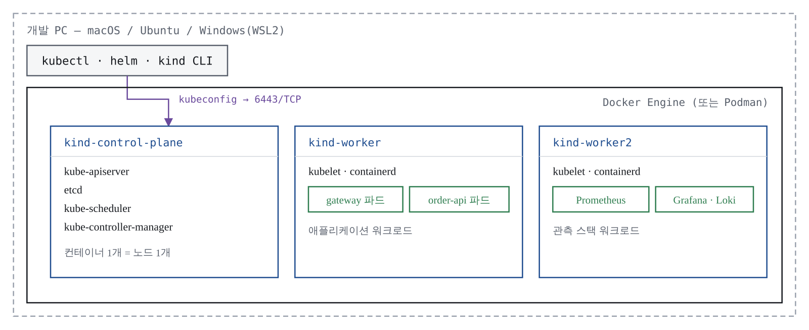
메트릭은 정해진 기간에 측정한 수치이고, 로그는 에러·경고·중요 이벤트 등 실행 중 일어난 사건의 기록입니다. 둘은 상호 보완적이되 용도가 다릅니다. 파드의 레이턴시가 높게 나타났다고 합시다. 메트릭은 "지금 이상하다"까지만 알려줍니다. 왜 이상한지는 그 시점의 애플리케이션 로그를 봐야 나옵니다. 한 줄로 요약하면 — 메트릭이 이상을 알려주고, 로그가 이유를 말해준다.
이 강의의 구조가 그대로 이 축을 따릅니다. M1~M5가 메트릭(이상 탐지), M6이 로그(원인 조사)입니다.
폐쇄형(closed-box) 모니터링 — 흔히 블랙박스 모니터링이라고 부릅니다 — 은 애플리케이션 외부에서 관찰합니다. CPU·메모리·스토리지를 보는 전통적 인프라 모니터링이 여기 속합니다. 인프라 컴포넌트에는 유용하지만, 앱이 왜 그렇게 동작하는지 맥락을 주지 못합니다. 파드 스케줄링 테스트가 성공하면 "스케줄러와 서비스 디스커버리는 정상" 이라고 판정하는 식입니다.
개방형(open-box) 모니터링 — 화이트박스 모니터링 — 은 총 HTTP 요청 수, 500 에러 횟수, 요청 레이턴시 같은 애플리케이션 내부 상태에 주목합니다. "디스크가 꽉 찼다"에서 멈추지 않고 "왜 꽉 찼을까"를 물을 수 있게 됩니다.
이 실습에서 만드는 것의 대부분은 개방형입니다. M2에서 앱 내부에 계측 코드를 심는 이유가 여기 있습니다. 폐쇄형은 M8에서 다시 등장합니다 — 카오스 실험의 정상 상태 판정은 외부 관찰이기 때문입니다.
모니터링 툴은 상용(데이터독, 시스딕)부터 클라우드 내장(CloudWatch, Azure Monitor)까지 많지만, 평가 기준은 두 가지면 충분합니다. 첫째, 메트릭이 어떻게 저장되는지 보라 — 키/값 시계열 데이터베이스를 제공하는 툴이 더 고수준의 질의를 가능하게 합니다. 둘째, 새 툴 도입은 학습·적용 비용이 크므로 현재 요건에 맞는지부터 평가하라.
이 실습이 프로메테우스를 쓰는 이유는 첫째 기준 때문입니다. 프로메테우스의 키/값 다차원 데이터 모델은 쿠버네티스의 레이블 방식과 구조가 같아서, 파드가 수십 번 죽고 다시 떠도 레이블로 묶어 하나의 서비스로 볼 수 있습니다. 2016년 쿠버네티스 다음으로 CNCF에 합류한 독립 오픈 소스라는 점도 실습·강의 재료로 적합합니다.
실습 시작 전에 화살표 방향 하나만 기억해 두세요.
메트릭은 프로메테우스가 가져가고(pull), 로그는 수집기가 밀어 넣습니다(push).
애플리케이션은 어디로도 메트릭을 보내지 않습니다 — /actuator/prometheus를
열어두고 기다릴 뿐입니다.
왜 pull인가. 수집 대상이 살아있는지를 수집기가 직접 확인할 수 있기 때문입니다.
스크레이프에 실패하면 up == 0이라는 메트릭이 자동으로 남습니다. push 방식이라면
"메트릭이 안 오는 것"과 "앱이 죽은 것"을 구분할 수 없습니다.
이 비대칭이 이후 모든 설정 차이를 만듭니다.
실습 전체가 아래 버전 조합을 전제로 합니다.
| 구성요소 | 고정 버전 | 함정 |
|---|---|---|
| Kubernetes / kind | 1.36.x / v0.32.0 | kubeadm 설정 포맷이 v1beta4 |
| kube-prometheus-stack | 차트 86.x–88.x | 설치 직전 helm search repo --versions로 확정 |
| Prometheus / Grafana | 3.x / 13.x | — |
| Loki | 3.7.x (차트 17.x) | 저장소는 grafana-community |
| 로그 수집기 | Grafana Alloy | 수집기는 Alloy 하나로 통일 |
| Spring Boot / JDK | 4.1.0 / 21 LTS | 게이트웨이 프로퍼티 접두사는 server.webflux 경유 (M2) |
| Helm | 3.16+ | OCI 차트 대응 |
버전 숫자를 문서에 박제하지 말고, 각 단계 시작 시 helm search repo ... --versions
출력을 화면에 띄운 뒤 팀 공용 값으로 정하세요.
CPU 4코어(권장 6), 메모리 12 GiB(권장 16, 도커에 최소 10 GiB 할당), 디스크 여유 30 GB,
cgroup v2. 메모리 12 GiB 미만이면 워커 노드를 1개로 줄이고 M6(로키)은 공용
클러스터로 대체하세요. 메모리 부족으로 파드가 Evicted되면 원인 파악에만 30분이 날아갑니다.
진도가 갈리는 원인의 대부분은 이해도가 아니라 하드웨어입니다.
# Docker Desktop은 별도 설치 후 Settings → Resources에서 CPU 4코어·메모리 10 GiB 이상
brew install kubectl kind helm jq
brew install --cask temurin@21Ubuntu·Windows(WSL2)에서도 같은 도구 조합을 씁니다. 윈도우는 반드시 WSL2 안의 우분투에서 실습합니다 — 파워셸 직접 실행은 볼륨 마운트와 cgroup 문제로 시간을 버립니다.
helm repo add prometheus-community https://prometheus-community.github.io/helm-charts
helm repo add grafana-community https://grafana-community.github.io/helm-charts
helm repo update
# 현재 차트 버전 확인 — 이 값을 팀 공용으로 고정한다
helm search repo prometheus-community/kube-prometheus-stack --versions | head -5
helm search repo grafana-community/loki --versions | head -5로키·그라파나 차트는 grafana가 아니라 grafana-community에 있습니다.
grafana/loki 경로로 설치하면 상용(GEL) 대상 차트를 받거나 아예 못 찾습니다.
preflight.sh 스크립트를 저장하고 실행합니다. 도구 5종의 버전,
도커 자원 할당, cgroup 버전을 한 번에 확인합니다.
chmod +x preflight.sh
./preflight.sh기대 출력(발췌):
=== 도구 버전 ===
docker 28.1.1 (권장 24.0+)
kubectl v1.36.1 (권장 v1.36.x)
kind v0.32.0 (권장 v0.32.0)
...
=== cgroup 버전 (cgroup2fs 여야 정상) ===
cgroup2fs
결과: 통과 — 다음 단계로 진행하세요첫 모임에서 전원이 각자 돌려 결과를 공유하면, 진도가 어긋나는 원인의 대부분을
미리 걷어냅니다. kubectl은 API 서버와 ±1 마이너 버전까지 허용되지만,
kind와 노드 이미지는 조합이 어긋나면 kind load가 실패하므로 정확히 맞춥니다.
노드 3개. 컨트롤 플레인(obs-control-plane)에 호스트 포트 3개를 연결하고,
워커 둘에는 라벨을 붙입니다 — obs-worker에 workload=apps(애플리케이션),
obs-worker2에 workload=observability(관측 스택). 워커를 둘로 나누는 이유는
M4·M7에서 노드셀렉터와 노드별 메트릭 차이를 실습하기 위해서입니다.
클러스터 이름은 obs로 고정합니다. 컨테이너 이름(obs-control-plane)과 kubeconfig
컨텍스트(kind-obs)가 이 이름에서 나오고, 시리즈 전체가 이를 전제합니다.
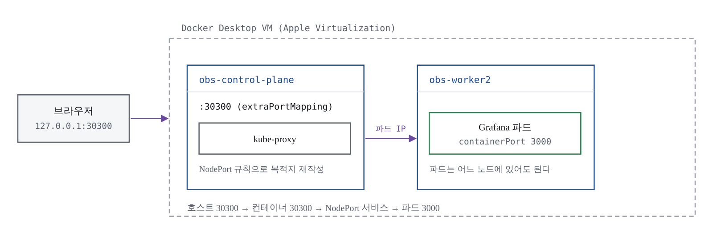
| 호스트 포트 | 용도 | 연결 시점 |
|---|---|---|
| 30080 | gateway | M2 |
| 30300 | Grafana | M3 |
| 30900 | Prometheus UI | M3 |
포트 매핑은 클러스터를 만드는 순간 결정되며 나중에 추가할 수 없습니다. 그래서 지금 넉넉히 뚫어둡니다.
kubeadm으로 만든 클러스터는 컨트롤 플레인 구성요소의 메트릭 포트를 루프백(127.0.0.1)에만 엽니다. 보안상 합리적인 기본값이지만, 프로메테우스는 다른 노드의 파드에서 스크레이프를 시도하므로 연결 자체가 성립하지 않습니다. M3에서 타깃 목록에 빨간 줄 네 개가 뜨는 원인이 이것입니다. 손봐야 할 대상은 넷 — kube-controller-manager(10257), kube-scheduler(10259), etcd(메트릭 전용 2381), kube-proxy(10249).
secure-port: "0"으로 HTTPS를 끄고 평문 포트를 여는
방법은 쓰지 않습니다. 인증 없이 클러스터 내부 메트릭이 노출되고, M3의 차트
기본값(HTTPS 스크레이프)과도 어긋납니다.
0.0.0.0 바인딩도 프로덕션에서는 하지 않습니다. 로컬 kind 클러스터는 도커 VM 안에
갇혀 있어 실질적 노출이 없지만, 실제 노드에서는 방화벽으로 포트를 제한하거나
노드 IP만 바인딩합니다. 이 설정을 그대로 사내로 옮기지 마세요.
mkdir -p ~/k8s-observability/infra
cd ~/k8s-observability/infrainfra/kind-cluster.yaml — 전문
kind: Cluster
apiVersion: kind.x-k8s.io/v1alpha4
name: obs
# ── 컨트롤 플레인 메트릭을 클러스터 내부에서 스크레이프 가능하게 만드는 패치 ──
# kind v0.32.0 + Kubernetes 1.36 조합에서는 kubeadm v1beta4 포맷을 쓴다.
# v1beta3와 달리 extraArgs가 맵이 아니라 name/value 목록이다.
kubeadmConfigPatches:
- |
kind: ClusterConfiguration
apiVersion: kubeadm.k8s.io/v1beta4
controllerManager:
extraArgs:
- name: bind-address
value: "0.0.0.0"
scheduler:
extraArgs:
- name: bind-address
value: "0.0.0.0"
etcd:
local:
extraArgs:
- name: listen-metrics-urls
value: "http://0.0.0.0:2381"
- |
kind: KubeProxyConfiguration
apiVersion: kubeproxy.config.k8s.io/v1alpha1
metricsBindAddress: "0.0.0.0:10249"
nodes:
- role: control-plane
image: kindest/node:v1.36.1@sha256:3489c7674813ba5d8b1a9977baea8a6e553784dab7b84759d1014dbd78f7ebd5
# 포트 매핑은 클러스터 생성 시점에만 정의할 수 있다. 나중에 못 늘린다.
extraPortMappings:
- containerPort: 30080 # gateway (M2)
hostPort: 30080
listenAddress: "127.0.0.1"
protocol: TCP
- containerPort: 30300 # Grafana (M3)
hostPort: 30300
listenAddress: "127.0.0.1"
protocol: TCP
- containerPort: 30900 # Prometheus UI (M3)
hostPort: 30900
listenAddress: "127.0.0.1"
protocol: TCP
- role: worker
image: kindest/node:v1.36.1@sha256:3489c7674813ba5d8b1a9977baea8a6e553784dab7b84759d1014dbd78f7ebd5
labels:
workload: apps
- role: worker
image: kindest/node:v1.36.1@sha256:3489c7674813ba5d8b1a9977baea8a6e553784dab7b84759d1014dbd78f7ebd5
labels:
workload: observability노드 이미지는 태그가 아니라 @sha256: 다이제스트까지 고정합니다. 태그만 쓰면
8명이 서로 다른 이미지를 받습니다. listenAddress: "127.0.0.1"를 빼면 매핑이
0.0.0.0으로 열려 같은 와이파이의 다른 기기에서 그라파나에 접근할 수 있게 됩니다 —
카페에서 실습한다면 반드시 넣으세요.
kubeadm 설정은 v1beta4 형식 — apiVersion을 명시한 name/value 목록 — 으로 씁니다.
extraArgs: {bind-address: 0.0.0.0} 형태의 v1beta3 맵은 kubeadm이 받지 않습니다.
패치가 왜 필요한지는 겪어봐야 남습니다. 4분이면 됩니다.
kubeadmConfigPatches 블록 전체를 주석 처리한 채 클러스터를 만들어 봅니다.
kind create cluster --config kind-cluster.yaml
docker exec obs-control-plane \
grep -h 'bind-address' \
/etc/kubernetes/manifests/kube-controller-manager.yaml \
/etc/kubernetes/manifests/kube-scheduler.yaml- --bind-address=127.0.0.1
- --bind-address=127.0.0.1이 상태로 M3까지 가면 프로메테우스 타깃 4종이 DOWN으로 남고, 그 시점에는 고칠 방법이 클러스터 재생성뿐입니다 — 실행 중인 클러스터에 kubeadm 패치를 소급 적용할 수는 없습니다. 삭제하고 주석을 해제해 다시 만듭니다.
kind delete cluster --name obs
kind create cluster --config kind-cluster.yaml재생성은 노드 이미지가 로컬에 남아 있어 2분이면 끝납니다. 이 시리즈에서 클러스터는 최소 두세 번 다시 만들게 됩니다 — 매니페스트를 고칠 때마다 지우고 다시 만드는 쪽이 상태가 꼬인 클러스터를 디버깅하는 것보다 빠릅니다.
핵심 판정 기준 세 가지:
kubectl get nodes -L workload노드 3개가 모두 Ready·v1.36.1이고 apps, observability 라벨이 보여야 합니다.
docker exec obs-control-plane \
grep -h 'bind-address' \
/etc/kubernetes/manifests/kube-controller-manager.yaml \
/etc/kubernetes/manifests/kube-scheduler.yaml--bind-address=0.0.0.0 두 줄. 127.0.0.1이 나오면 5절의 실패 재현 상태입니다.
NODE_IP=$(kubectl get node obs-control-plane \
-o jsonpath='{.status.addresses[?(@.type=="InternalIP")].address}')
kubectl run etcd-check --rm -i --restart=Never \
--image=curlimages/curl:latest -- \
curl -s --max-time 5 "http://${NODE_IP}:2381/metrics" | head -3etcd_cluster_version{...} 1 이 보이면 스크레이프 경로가 열린 것입니다.
출력이 비어 있으면 매니페스트 grep부터 다시 확인합니다.
이 모듈의 완료 조건:
preflight.sh 통과helm repo list에 저장소 2개빈 클러스터는 관측할 대상이 없습니다. M2에서 Spring Boot 4.1 서비스 두 개
(게이트웨이, 주문 API)를 만들어 계측을 심습니다. 이 모듈이 남긴 workload=apps
라벨이 M2 배포 매니페스트의 노드셀렉터가 되고, 호스트 포트 30080이 게이트웨이의
진입점이 됩니다. M2에서 정하는 메트릭 이름과 태그가 M4의 PromQL, M5의 대시보드를
결정하므로, 다음 모듈은 기능이 아니라 계측 중심으로 진행합니다.
preflight.sh · infra/kind-cluster.yaml(다이제스트 포함, 팀 저장소에 커밋) ·
팀 공용 차트 버전 합의 기록
M1에서 만든 클러스터는 비어 있습니다. 관측할 애플리케이션이 없으면 프로메테우스를 설치해도 노드 메트릭밖에 볼 게 없고, 이 강의의 목적지인 "내 서비스의 상태를 읽는다"에 도달할 수 없습니다.
서비스 하나로도 메트릭 실습은 됩니다. 그럼에도 둘(게이트웨이 + 주문 API)로 나누는 이유는 하나뿐입니다 — 지연이 전파되는 모습을 봐야 RED 지표가 왜 서비스별로 필요한지 체감할 수 있기 때문입니다. 주문 API가 500ms 느려질 때 게이트웨이의 P99가 어떻게 따라 움직이는지, M5에서 두 그래프를 나란히 놓고 보게 됩니다.
코드 자체는 단순합니다. 대신 어떤 메트릭이 어떤 이름과 태그로 나오는지를 여기서 정합니다. 이 결정을 대충 하면 M4의 PromQL과 M5의 대시보드를 전부 다시 써야 하므로, 이 모듈은 기능이 아니라 계측을 중심으로 진행합니다.
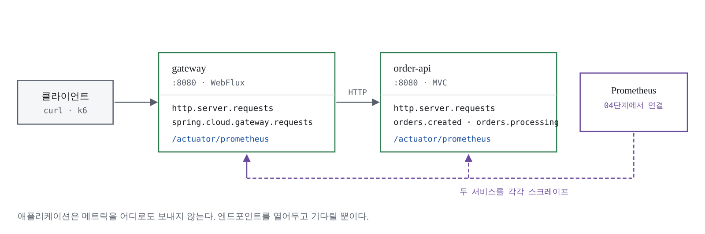
쿠버네티스가 기존 모니터링과 다른 지점부터 짚습니다. 24/7 가동되는 VM은 상태 보존을 확인하면 되지만, 파드는 수명이 짧고 다이내믹합니다. 개별 인스턴스가 아니라 서비스 단위의 지표 체계가 따로 필요합니다. 그 표준이 두 가지입니다.
USE (브렌던 그레그): 모든 리소스에 대해 사용률(Utilization) · 포화도(Saturation) · 에러 수(Errors)를 확인하라. 인프라 수준용입니다. 노드 네트워크의 병목을 이 세 지표로 빠르게 찾는 식이고, 애플리케이션 수준에는 한계가 뚜렷합니다.
RED (톰 윌키): 처리율(Rate) · 에러 수(Errors) · 처리 시간(Duration). 애플리케이션의 엔드 유저 경험 위주입니다. 이 실습의 게이트웨이라면 — 요청을 얼마나 처리하고 있나(R), 유저가 500을 얼마나 받고 있나(E), 얼마나 걸리나(D).
RED의 기반 사상이 구글의 4대 골든 시그널(레이턴시·트래픽·에러·포화도)입니다. 두 방법론은 상보적입니다 — USE는 인프라, RED는 애플리케이션. M3에서 설치할 kube-prometheus-stack의 내장 대시보드가 USE를, 이 모듈에서 심는 계측과 M4의 질의 6개가 RED를 담당합니다.
요청 100건 중 99건이 10ms, 1건이 3초라면 평균은 40ms입니다. 대시보드는 초록색이고, 그 1건을 겪은 사용자는 이탈합니다. P99를 보면 3초가 그대로 드러납니다. M5에서 만들 패널이 전부 분위수 기반인 이유입니다.
분위수를 계산하려면 히스토그램 버킷(_bucket 시계열)이 필요한데, 이것은 기본으로
생성되지 않습니다. percentiles-histogram 설정을 켜야 만들어지고, 켜는 순간 시계열
수가 버킷 개수만큼 늘어납니다. 공짜가 아니라는 사실을 알고 켜는 것과 모르고 켜는
것은 다릅니다. 이 실습은 전역이 아니라 필요한 타이머에만 켭니다.
HTTP 요청 한 건이 들어오면 마이크로미터는 타이머 하나를 갱신하는데, 프로메테우스
포맷으로 나올 때는 _count(건수) · _sum(누적 시간) · _bucket(분포) 세 종류로
쪼개집니다. M4의 PromQL이 어렵게 느껴지는 이유의 8할이 이 구조를 모르기 때문이므로,
코드를 쓰기 전에 이것부터 이해하고 갑니다.
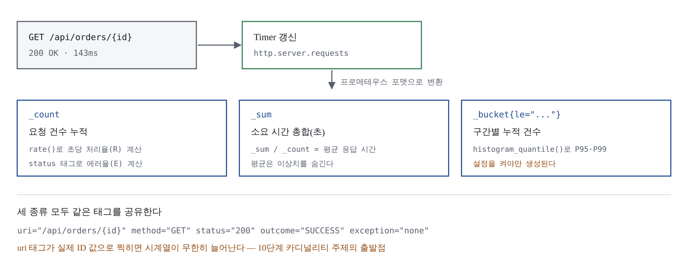
_bucket은 기본으로 생성되지 않는다 — percentiles-histogram을 켜야 만들어지고, 켜는 순간 시계열 수가 버킷 개수만큼 늘어난다.| 서비스 | 스택 | 역할 |
|---|---|---|
| gateway | Spring Cloud Gateway Server WebFlux | 외부 진입점. 라우팅과 게이트웨이 자체 메트릭 |
| order-api | Spring MVC + Actuator | 주문 생성·조회. 커스텀 메트릭과 지연·에러 시뮬레이션 |
데이터베이스는 넣지 않습니다. 주문은 ConcurrentHashMap에 보관합니다. DB를 붙이면
파드가 하나 더 늘고 커넥션 풀 디버깅으로 시간이 새는데, 이 시리즈에서 배울 것은
커넥션 풀 메트릭이 아니라 계측 방법이기 때문입니다. HikariCP 메트릭은 액추에이터가
자동으로 잡아주므로, 사내 프로젝트에 옮길 때는 대시보드만 추가하면 됩니다.
start.spring.io에서 두 프로젝트를 받습니다.
공통: Gradle · Java 21 · Boot 4.1.0 · groupId com.study.obs.
order-api는 web,actuator,validation, gateway는 cloud-gateway,actuator 의존성.
빌드 파일에서 두 곳이 함정입니다.
첫째, 게이트웨이 스타터 이름은
spring-cloud-starter-gateway-server-webflux입니다.
spring-cloud-starter-gateway라는 이름의 아티팩트는 존재하지 않습니다.
둘째, 릴리스 트레인. Boot 4.x와 짝을 이루는 Spring Cloud는 2025.1.x(Oakwood)입니다. 3.5용인 2025.0.x를 쓰면 의존성 해석 단계에서 깨집니다.
gateway/build.gradle — 핵심부
ext {
set('springCloudVersion', '2025.1.2')
}
dependencies {
implementation 'org.springframework.cloud:spring-cloud-starter-gateway-server-webflux'
implementation 'org.springframework.boot:spring-boot-starter-actuator'
// 이 한 줄이 /actuator/prometheus 엔드포인트를 만든다.
runtimeOnly 'io.micrometer:micrometer-registry-prometheus'
}전체 소스(도메인·DTO·컨트롤러·예외 처리)는 실습 코드 저장소(apps/)에 있습니다.
여기서는 계측의 결정 지점인 OrderService만 봅니다.
service/OrderService.java — 계측부
public OrderService(MeterRegistry registry) {
this.createdCounter = Counter.builder("orders.created")
.description("생성에 성공한 주문 수")
.tag("channel", "api")
.register(registry);
this.rejectedCounter = Counter.builder("orders.rejected")
.description("검증에 걸려 거부된 주문 수")
.tag("reason", "quantity_exceeded")
.register(registry);
this.processingTimer = Timer.builder("orders.processing")
.description("주문 처리에 걸린 시간")
.publishPercentileHistogram()
.register(registry);
Gauge.builder("orders.stored", store, Map::size)
.description("메모리에 보관 중인 주문 수")
.register(registry);
}계측 코드에서 눈여겨볼 네 가지:
orders.created)으로 씁니다. 프로메테우스 포맷으로 나갈 때
orders_created_total로 자동 변환됩니다 — 마이크로미터의 이식성 규칙입니다channel="api"는 안전하고, 주문 ID나 상품명을
태그로 넣으면 시계열이 폭발합니다publishPercentileHistogram()은 이 타이머에만 버킷을 만듭니다. 전역 설정 대신
필요한 곳에만 켜는 방식입니다ChaosController(/api/chaos/slow, /api/chaos/error)도 함께 만듭니다.
M4~M5에서 그래프를 움직이고 M8에서 앱 수준 장애를 주입하는 실습 전용 장치입니다.
사내에 복사할 일이 있다면 @Profile("chaos")로 분리하세요.
order-api 설정의 결정 지점:
order-api/src/main/resources/application.yml — 발췌
management:
endpoints:
web:
exposure:
# 필요한 것만 연다. '*'로 열면 env·heapdump 같은 민감 엔드포인트까지 노출된다.
include: health,info,prometheus
endpoint:
health:
probes:
enabled: true # /actuator/health/liveness·readiness — 실습 B의 프로브에서 쓴다
metrics:
distribution:
percentiles-histogram:
http.server.requests: true # 이게 있어야 _bucket이 생기고 P95·P99가 나온다
slo:
http.server.requests: 50ms,100ms,200ms,500ms,1sgateway 라우트 설정 — 접두사가 바뀐 자리입니다:
gateway/src/main/resources/application.yml — 발췌
spring:
cloud:
gateway:
server:
webflux:
# 접두사가 spring.cloud.gateway.routes 에서 여기로 바뀌었다.
# 옛 접두사로 쓰면 라우트가 등록되지 않고 404만 돌아온다.
routes:
- id: order-api
uri: ${ORDER_API_URI:http://localhost:8081}
predicates:
- Path=/api/orders/**,/api/chaos/**액추에이터 gateway 엔드포인트는 절대 열지 않습니다. 인증 없이 노출하면 런타임
라우트 조작·환경 프로퍼티 유출 취약점(CVE-2025-41243, CVE-2025-41253)의 성립 조건에
그대로 들어맞습니다. "로컬 실습이니까"라고 열어두면 그 설정이 사내로 복사됩니다.
라우트가 소리 없이 사라지는 실패를 미리 재현합니다.
gateway의 application.yml에서 라우트 블록의 접두사를 줄여봅니다.
spring:
cloud:
gateway:
routes: # ← server.webflux 없이. 2025.0 이전 형식
- id: order-api
...앱을 재시작하고 요청을 보내면:
curl -s -o /dev/null -w '%{http_code}\n' http://localhost:8080/api/orders
# 404에러도 경고도 없이 404만 돌아옵니다. 라우트가 아예 등록되지 않았기 때문입니다.
server.webflux를 되돌리면 정상 동작합니다. 증상(404)만 보면 백엔드 문제로 오인하기
쉬운 사례라, 접두사부터 확인하는 습관이 디버깅 시간을 아낍니다.
두 앱을 맥에서 그대로 띄웁니다(order-api는 8081, gateway는 8080). 게이트웨이를 거쳐 주문 40건 + 거부 5건 + chaos 요청을 만든 뒤:
curl -s http://localhost:8081/actuator/prometheus | grep '^orders_'orders_created_total{channel="api"} 40.0
orders_rejected_total{reason="quantity_exceeded"} 5.0
orders_stored 40.0
orders_processing_seconds_count 45.0
...orders.created가 orders_created_total이 된 것을 확인하세요 — 점은 언더스코어로,
카운터에는 _total 접미사가 붙습니다. M4에서 PromQL을 쓸 때는 변환된 이름을 씁니다.
추가 판정 기준 세 가지:
http_server_requests_seconds_bucket 개수가 0이 아니다 (0이면 percentiles-histogram
미적용 — 이대로 가면 M5의 P95 패널이 No data로 남습니다)spring_cloud_gateway_requests_seconds_count에 routeId="order-api" 태그가 있다/actuator/env와 /actuator/gateway/routes가 404다 (200이면 exposure 설정 재확인)Dockerfile 없이 bootBuildImage 한 번으로 끝냅니다. 빌드팩이 JRE 선택, 계층 분리,
메모리 계산까지 처리합니다.
각 앱 build.gradle 끝에 추가 (gateway는 imageName만 obs/gateway:0.0.1)
tasks.named('bootBuildImage') {
imageName = "obs/order-api:0.0.1"
builder = "paketobuildpacks/builder-noble-java-tiny:latest"
environment = [
"BP_JVM_VERSION": "21",
"BP_JVM_TYPE": "JRE",
"BP_SPRING_CLOUD_BINDINGS_DISABLED": "true"
]
}cd ~/k8s-observability/apps/order-api && ./gradlew bootBuildImage
cd ../gateway && ./gradlew bootBuildImage
kind load docker-image obs/order-api:0.0.1 --name obs
kind load docker-image obs/gateway:0.0.1 --name obs태그에 latest를 쓰지 않습니다. latest는 imagePullPolicy 기본값을 Always로
바꾸는데, 레지스트리가 없는 이 실습에서는 존재하지 않는 레지스트리로 나가려다
ImagePullBackOff에 빠집니다 — 그 자체로 실패 조건입니다. 매니페스트에는
imagePullPolicy: IfNotPresent를 명시합니다.
사내 파이프라인이 Dockerfile 기반이라면 계층 분리를 직접 합니다.
jarmode는 -Djarmode=tools ... extract --layers --launcher 형식을 쓰고
(layertools는 동작하지 않습니다), 빌드팩과 달리 메모리 계산기가 없으므로
-XX:MaxRAMPercentage를 직접 줘야 합니다.
프로브를 잘못 걸면 관측 실습 내내 파드가 재시작을 반복해 그래프가 엉망이 됩니다. JVM 애플리케이션은 기동이 느려서 특히 그렇습니다.
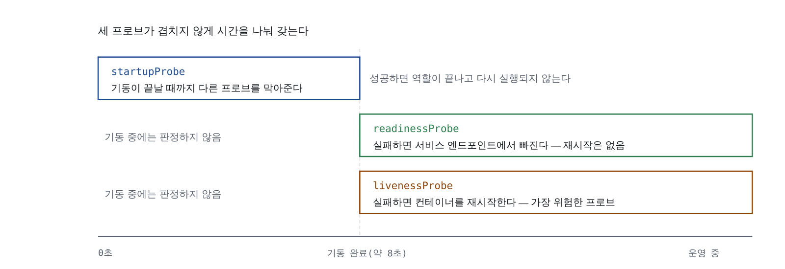
| 프로브 | 액추에이터 경로 | 실패했을 때 |
|---|---|---|
| startupProbe | /actuator/health/liveness | 재시도. 한계를 넘으면 재시작 |
| readinessProbe | /actuator/health/readiness | 서비스에서 제외(트래픽 차단) |
| livenessProbe | /actuator/health/liveness | 컨테이너 재시작 |
startupProbe가 없으면 livenessProbe가 기동 중인 앱을 죽은 것으로 보고 재시작시키고,
다시 기동하다 또 죽는 부팅 루프가 만들어집니다 — 스프링 앱에 프로브를 걸 때 가장
흔한 사고입니다. liveness에는 외부 의존성 검사를 넣지 않는 것이 원칙입니다.
DB가 잠깐 끊겼다고 앱을 재시작하면 상황이 더 나빠집니다.
둘의 구분은 배포 전략에서도 그대로 쓰입니다 — 레디니스는 "트래픽 받을 준비", 라이브니스는 "살아 있나". M8에서 프로브를 일부러 빼는 실험으로 되돌아옵니다.
매니페스트 전문(00-namespace.yaml, 10-order-api.yaml, 20-gateway.yaml)은
실습 코드 저장소(k8s/)에 있습니다. 그냥 복사하지 말고 두 가지 결정만은 눈으로 따라가세요.
Service의 app.kubernetes.io/name 라벨과 포트 이름 http를 M4의 ServiceMonitor가
선택 조건으로 씁니다. Deployment 셀렉터·파드 라벨·Service 셀렉터는 파드를 묶기 위한
것이고, Service 자신의 라벨은 ServiceMonitor가 서비스를 찾기 위한 것 — 값이 같아도
역할이 다르므로 각각 써야 합니다.
CPU limit을 일부러 두지 않습니다. CPU 제한을 걸면 CFS 쿼터 스로틀링으로 응답 시간 그래프에 애플리케이션과 무관한 톱니가 생기고, M4~M5에서 "이 지연이 코드 때문인가 스로틀링 때문인가"를 구분할 수 없게 됩니다. 메모리는 제한합니다 — 압축 불가능한 자원이라 제한이 없으면 노드 전체가 위험해집니다. 이 판단은 실습 환경 기준이며, 공용 클러스터라면 CPU 제한이 필요합니다.
배포:
kubectl apply -f 00-namespace.yaml
kubectl apply -f 10-order-api.yaml
kubectl apply -f 20-gateway.yaml
kubectl -n apps rollout status deploy/order-api --timeout=180s
kubectl -n apps rollout status deploy/gateway --timeout=180s코드를 고칠 때마다 반복할 절차는 apps/redeploy.sh 스크립트로 만들어 둡니다.
같은 태그로 재적재 후 rollout restart를 하면 캐시된 옛 이미지가 뜰 때가 있어
원인을 찾느라 30분을 쓰게 됩니다 — 스크립트가 태그를 필수 인자로 받는 이유입니다.
kubectl -n apps get pods -o wide파드 3개(order-api 2, gateway 1)가 모두 1/1 Running, 재시작 0회, 노드는 전부
obs-worker. obs-worker2에 떴다면 노드셀렉터 누락, Pending이면 라벨 미부착
또는 자원 부족입니다 — kubectl -n apps describe pod의 Events에 이유가 그대로 나옵니다.
curl -s -X POST http://localhost:30080/api/orders \
-H 'Content-Type: application/json' \
-d '{"item":"latte","quantity":3}' | python3 -m json.tool201 응답. M1에서 뚫은 hostPort 30080 → NodePort 30080 경로가 이어진 것입니다.
kubectl -n apps port-forward svc/order-api 18080:8080 >/dev/null 2>&1 &
sleep 2
curl -s http://localhost:18080/actuator/prometheus | grep -c '^orders_'
curl -s http://localhost:18080/actuator/prometheus | grep -c 'http_server_requests_seconds_bucket'
kill %1두 숫자 모두 0보다 커야 합니다. 이것이 M3 진입 조건입니다 — 여기서 0이면 프로메테우스를 설치해도 앱 메트릭은 보이지 않습니다.
마지막으로 부하 100건 + chaos 20건을 넣어 그래프의 재료를 만들어 둡니다.
앱은 /actuator/prometheus를 열어두고 기다리고 있지만, 아직 아무도 가져가지 않습니다.
M3에서 kube-prometheus-stack을 설치해 수집을 시작합니다. M1의 bind-address 패치가
컨트롤 플레인 타깃 4종의 채점표로 돌아오고, 이 모듈이 심은 Service 라벨
app.kubernetes.io/name과 포트 이름 http는 M4에서 ServiceMonitor의 선택 조건이
됩니다. 이 모듈이 정한 메트릭 이름 목록 — 어떤 메트릭이 어느 단계에서
쓰이는지 — 를 옆에 두고 진행하면 M4·M5가 절반은 끝나 있습니다.
apps/order-api · apps/gateway 소스(팀 저장소 커밋) ·
k8s/00-namespace.yaml · k8s/10-order-api.yaml · k8s/20-gateway.yaml ·
apps/redeploy.sh
M2에서 앱 두 개가 /actuator/prometheus로 메트릭을 내보내고 있다. 그런데 그 메트릭을
지금 아무도 읽지 않는다. curl로 직접 열어보면 텍스트가 쏟아지지만, 5분 전 값과 비교할
수도, 그래프로 볼 수도, 임계치를 걸 수도 없다. 메트릭은 쌓여야 쓸모가 생기고,
쌓으려면 긁어서 저장하는 쪽이 필요하다.
이 모듈에서 그 "긁어서 저장하는 쪽"을 올린다. 헬름 차트 하나로 프로메테우스· Alertmanager·그라파나·node-exporter·kube-state-metrics가 한꺼번에 올라온다. 설치 자체는 명령 두 줄이다. 이 모듈의 실제 내용은 설치가 아니라 타깃 검증이다 — M1에서 클러스터를 만들 때 넣어둔 bind-address 패치가 값을 하는지 여기서 판가름 난다.
한 가지 미리 말해두면, 설치가 끝나도 우리 앱은 타깃 목록에 없다. 앱은 자동으로 잡히지 않는다. 그 연결이 M4의 주제이고, 이 모듈은 연결할 상대를 세우는 단계다.
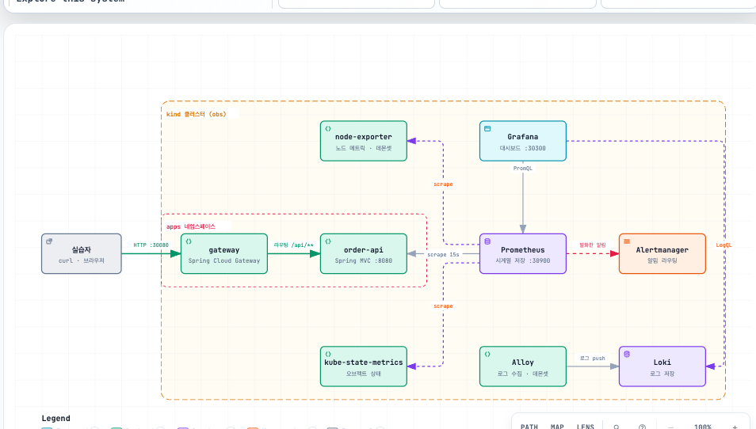
클러스터 안에서 메트릭을 만드는 컴포넌트는 셋이고, 셋의 역할이 다르다. 이 구분을 못 하면 "메모리 사용량이 왜 두 군데서 다르게 나오나" 같은 질문에서 헤맨다.
| 컴포넌트 | 보는 것 | 어디서 어떻게 | 저장 |
|---|---|---|---|
| cAdvisor | 컨테이너의 리소스 사용량 | kubelet과 한몸으로 모든 노드에서 실행. cgroup 트리에서 CPU·메모리, statfs로 디스크 | 안 함 (표출만) |
| 메트릭 서버 | 사용량의 현재 요약 | kubelet API에서 CPU·메모리를 수집해 메모리에 저장 | 안 함 (인메모리) |
| kube-state-metrics | 오브젝트의 상태 | API 서버가 아는 것 — 디플로이먼트가 원하는 레플리카 vs 실제 레플리카 | 안 함 (표출만) |
cAdvisor는 모든 컨테이너 메트릭의 진실 공급원이다. 구현 세부까지 알 필요는 없지만, "컨테이너 CPU·메모리 지표는 결국 여기서 나온다"는 사실은 알아야 한다.
메트릭 서버는 역사가 있다. 전임자 힙스터(Heapster)가 데이터 싱크 설계 문제로
사용 중단됐고, 리소스 메트릭 API를 쿠버네티스 집계 API로 표준화하면서 해결됐다.
메트릭 서버는 그 표준의 구현체다. kubectl top과 HPA·VPA·스케줄러가 소비하며,
장기 저장을 하지 않는다. "10분 전 CPU는?"에 답하지 못한다 — 그 답을 하려고
프로메테우스를 설치하는 것이다. 커스텀 메트릭 API를 쓰면 프로메테우스의 임의
메트릭(큐 길이 등)으로 HPA를 돌릴 수도 있다. 프로메테우스가 최초의 커스텀 메트릭
어댑터였다.
kube-state-metrics는 사용량이 아니라 상태를 본다. 파드가 몇 개 대기 중인가, 디플로이먼트의 가용 레플리카는 몇인가, 스케줄링 불가 노드가 있는가, 잡이 몇 개 실패했는가. 구분을 한 문장으로 하면 — node-exporter는 기계의 상태를 보고("이 노드의 메모리가 몇 바이트 남았는가"), kube-state-metrics는 API 서버가 아는 상태를 본다("레플리카 3개를 원하는데 실제로는 2개인가"). 전자는 노드마다 하나씩(DaemonSet), 후자는 클러스터에 하나면 된다.
"전부 다 모니터링"은 답이 아니다. 잡다한 메트릭에 정작 봐야 할 신호가 묻힌다. 권장 순서는 노드 → 클러스터 컴포넌트 → 클러스터 애드온 → 애플리케이션이다. 파드가 자꾸 대기 상태에 빠지면 먼저 노드 리소스 사용률을 보고, 문제없으면 클러스터 수준으로 좁혀 들어간다. 이 모듈에서 만드는 타깃 지도가 정확히 이 계층을 따라간다 — node-exporter(노드), etcd·스케줄러(컴포넌트), CoreDNS(애드온), 그리고 M4에서 붙일 앱.
프로메테우스는 구글 내부 모니터링 시스템 보그몬(Borgmon)에서 아이디어를 가져왔다. 키/값 쌍의 다차원 데이터 모델 — 쿠버네티스가 레이블을 쓰는 방식과 같은 계보다. 쿠버네티스의 레이블·서비스 디스커버리·메타데이터와 궁합이 맞는 것은 우연이 아니다.
메트릭 포맷은 사람이 읽을 수 있는 텍스트다:
# HELP node_cpu_seconds_total Seconds the CPU is spent in each mode.
# TYPE node_cpu_seconds_total counter
node_cpu_seconds_total{cpu="0",mode="idle"} 5144.64수집은 풀(pull) 모델이다. 프로메테우스가 타깃 엔드포인트를 주기적으로 긁는다. 쿠버네티스 자체와 Nginx·Traefik·이스티오 등이 이미 이 포맷으로 표출하고, 아닌 서비스는 익스포터로 변환한다. M2에서 앱에 넣은 micrometer-registry-prometheus가 정확히 이 포맷을 만드는 부품이었다.
차트 하나로 올라오는 구성 요소와 역할:
| 구성요소 | 형태 | 하는 일 |
|---|---|---|
| Prometheus Operator | Deployment | CRD를 감시해 프로메테우스 설정을 대신 써준다 |
| Prometheus | StatefulSet | 실제로 스크레이프하고 시계열을 저장한다 |
| Alertmanager | StatefulSet | 발생한 알림을 묶고 라우팅한다 (M5) |
| Grafana | Deployment | 시각화. 기본 대시보드 수십 개가 함께 온다 |
| node-exporter | DaemonSet | 노드의 CPU·메모리·디스크·네트워크 지표 |
| kube-state-metrics | Deployment | 레플리카 수, 파드 상태 등 오브젝트 지표 |
| CRD 8종 + PrometheusRule 다수 | CRD / CR | ServiceMonitor 등 선언 리소스, 기본 알림 규칙 |
가장 많이 오해하는 부분: 오퍼레이터는 스크레이프하지 않는다. ServiceMonitor를
읽어 프로메테우스 설정 파일을 생성하고 리로드시키는 것이 전부다. 그리고 오퍼레이터는
아무 ServiceMonitor나 읽지 않는다 — 프로메테우스 리소스에 정의된 셀렉터에 맞는 것만
고른다. 기본값은 "헬름 릴리스 이름과 같은 release 라벨을 가진 것". M4의 첫 관문이
바로 이것이다.
운영 팁 하나는 기억해 둘 것: 운영에서는 클러스터 모니터링을 프로덕션에 영향을 주지 않는 별도 '유틸리티 클러스터'에서 하는 편이 좋고, 타노스(Thanos)로 고가용성과 외부 스토리지를 붙일 수 있다. 실습은 한 클러스터 안에 다 넣는다 — 그래서 M1에서 관측 스택 전용 워커(obs-worker2)에 nodeSelector로 몰아두는 것이다.
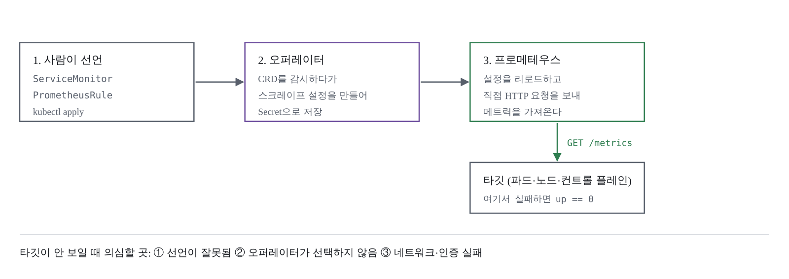
문서에 버전을 박아두지 않는다. 설치 직전에 확인하고 그 값을 팀 전체가 공유한다. 8명이 서로 다른 차트 버전을 쓰면 M5에서 대시보드 JSON이 어긋난다.
helm repo update
helm search repo prometheus-community/kube-prometheus-stack --versions | head -4NAME CHART VERSION APP VERSION
prometheus-community/kube-prometheus-stack 88.3.0 v0.91.0CHART VERSION이 차트, APP VERSION이 Prometheus Operator 버전이다. 이 문서는 88.3.0 기준으로 쓴다.
CRD는 헬름이 업그레이드해주지 않는다. 처음 설치할 때는 함께 생성되지만
helm upgrade로 차트를 올릴 때 CRD는 갱신되지 않는다. 실습 중 버전을 올릴 일이
생기면 지우고 다시 설치하는 편이 빠르다.
mkdir -p ~/k8s-observability/monitoring
cd ~/k8s-observability/monitoringmonitoring/kps-values.yaml — 전문은 실습 코드 저장소에 있다. 구조와 이유만 짚는다:
prometheus.service: NodePort 30900 — M1에서 뚫어둔 호스트 포트와 짝retention: 3d / retentionSize: 4GB: 실습용. 로컬 디스크를 아끼는 값storageSpec: 8Gi PVC. 생략하면 emptyDir이 되어 파드 재시작 시 데이터가 사라진다nodeSelector: workload: observability: 관측 스택을 obs-worker2에 모은다grafana.adminPassword: obs-study, NodePort 30300 — 실습 전용. 운영은 Secret 주입kubeControllerManager·kubeScheduler·kubeEtcd·kubeProxy 블록: M1에서
bind-address를 0.0.0.0으로 열어둔 덕분에 동작한다. 패치가 없으면 전부 DOWN이다컨트롤 플레인 블록에서 두 가지 선택을 눈여겨볼 것. 첫째, etcd는 2379가 아니라
메트릭 전용 2381 포트를 쓴다. 2379는 상호 TLS가 필요한 클라이언트 포트다.
둘째, insecureSkipVerify: true — kind의 인증서는 노드 IP를 SAN에 갖고 있지 않아
이름 검증에 실패하기 때문에 검증만 건너뛴다. 암호화와 토큰 인증은 그대로 유지되므로,
HTTPS를 아예 끄고 평문 포트를 여는 방식보다 안전하다. 운영에서는 적절한
SAN을 가진 인증서를 발급해 이 옵션을 끄는 것이 정답이다.
helm upgrade --install kps prometheus-community/kube-prometheus-stack \
--namespace monitoring --create-namespace \
--version 88.3.0 \
-f kps-values.yaml \
--wait --timeout 15m릴리스 이름 kps가 리소스 이름과 release 라벨에 그대로 들어가고, M4의
ServiceMonitor 라벨 값이 된다. --wait 때문에 5~8분간 출력 없이 멈춘 것처럼
보이는데 정상이다.
kubectl -n monitoring get podsnode-exporter가 3개(노드 수와 동일)인지 확인한다. 그라파나 파드가 3/3인
이유는 뒤에서 다룬다.
kubectl get crd | grep monitoring.coreos.com # CRD 등록 확인
kubectl -n monitoring get pvc # Bound여야 한다브라우저에서 localhost:30900/targets를 열어도 되지만, 질의가 빠르고 정확하다.
curl -s --get http://localhost:30900/api/v1/query \
--data-urlencode 'query=sum by (job) (up)' \
| jq -r '.data.result[] | "\(.metric.job)\t\(.value[1])"' \
| sortalertmanager 1
apiserver 1
coredns 2
kps-grafana 1
kube-controller-manager 1
kube-dns 2
kube-etcd 1
kube-proxy 3
kube-scheduler 1
kube-state-metrics 1
kubelet 3
node-exporter 3
prometheus 1
prometheus-operator 1여기가 M1의 채점 결과다. kube-controller-manager·kube-scheduler·kube-etcd·
kube-proxy 네 개가 1 이상이면 bind-address 패치가 제대로 걸린 것이다. 숫자가
안 나오거나 0이면 M1으로 돌아가 클러스터를 다시 만들어야 하고, 앱 배포도 다시
하게 된다. 그래서 M1에서 미리 넣어둔 것이다.
# 실패한 타깃만 골라 본다 — 아무것도 안 나와야 한다
curl -s --get http://localhost:30900/api/v1/query \
--data-urlencode 'query=up == 0' \
| jq -r '.data.result[] | "\(.metric.job) \(.metric.instance)"'출력이 비어 있으면 통과다. 무언가 나오면 /targets의 Error 열을 본다:
connection refused는 바인딩, x509는 인증서, 401/403은 RBAC 문제로 갈린다.
orders_created_total을 질의하면 결과가 비어 있다. 정상이다. M2에서 엔드포인트는
열어뒀지만 프로메테우스에게 "저기를 긁어라"라고 알려주지 않았기 때문이다.
그 연결이 M4다.
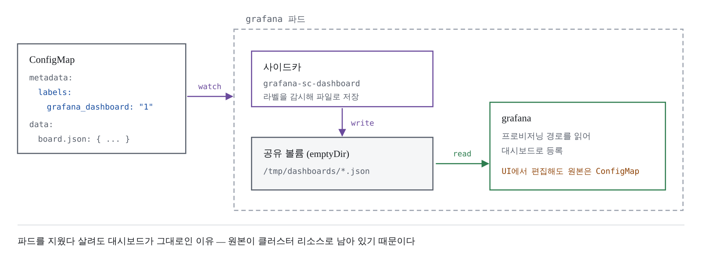
localhost:30300에 admin / obs-study로 로그인하면 만든 적 없는 대시보드가
수십 개 들어 있다. 그라파나 파드가 3/3이었던 이유가 여기 있다:
kubectl -n monitoring get pod -l app.kubernetes.io/name=grafana \
-o jsonpath='{range .items[0].spec.containers[*]}{.name}{"\n"}{end}'grafana-sc-dashboard
grafana-sc-datasources
grafana앞의 둘이 사이드카다. 쿠버네티스 API를 지켜보다가 특정 라벨이 붙은 ConfigMap을 발견하면 내용을 파일로 꺼내 공유 볼륨에 쓴다. 그라파나는 그 디렉터리를 읽을 뿐이다. 차트의 기본 대시보드도 전부 이 구조로 들어왔다 — 즉 우리도 같은 방법으로 대시보드를 추가할 수 있다. 재시작도, UI 임포트도 필요 없다.
먼저 열어볼 대시보드 셋: Kubernetes / Compute Resources / Namespace (Pods) (apps 네임스페이스를 고르면 M2에서 배포한 파드 3개의 CPU·메모리), Node Exporter / Nodes(노트북이 버거우면 여기부터), Kubernetes / Kubelet. 전부 컨테이너 관점의 자원 사용량이다. "주문 API가 초당 몇 건이고 P99가 몇 ms인가"는 아직 어디에도 없다.
데이터소스도 같은 방식으로 프로비저닝된다. 하나 기억할 것 — 대시보드 JSON이 데이터소스를 지목할 때는 이름이 아니라 uid를 쓴다. 팀원끼리 JSON을 주고받을 때 uid가 다르면 패널이 전부 비어 보인다. 패널에 datasource를 아예 지정하지 않으면 기본 데이터소스가 쓰여 이식성이 가장 좋다.
사이드카 기본 설정은 그라파나와 같은 네임스페이스만 감시한다. 감시 범위를 넓히고
폴더 정리 규칙을 넣는다. kps-values.yaml의 grafana 블록에 추가하는 핵심
(전문은 실습 코드 저장소에):
sidecar:
dashboards:
enabled: true
label: grafana_dashboard # 이 라벨이 붙은 ConfigMap을 대시보드로 인식
labelValue: "1"
searchNamespace: ALL # apps 네임스페이스의 대시보드도 잡힌다
folderAnnotation: grafana_folder
provider:
foldersFromFilesStructure: true
datasources:
enabled: true
label: grafana_datasource
searchNamespace: ALLhelm upgrade kps prometheus-community/kube-prometheus-stack \
--namespace monitoring --version 88.3.0 \
-f kps-values.yaml --wait --timeout 10m
kubectl -n monitoring rollout status deploy/kps-grafanasearchNamespace: ALL은 공짜가 아니다. 사이드카가 클러스터 전체 ConfigMap을
감시하므로 권한과 API 부하가 그만큼 늘어난다. 네임스페이스가 수백 개인 운영
클러스터라면 필요한 것만 콤마로 나열하는 편이 낫다. 실습은 셋뿐이라 ALL로 둔다.
UI에서 만든 대시보드는 파드가 재생성되면 사라질 수 있다. 원본은 저장소에 두고
UI는 편집기로만 쓴다. monitoring/dashboards/obs-overview.json
(전문은 실습 코드 저장소에 — 스크레이프 실패 타깃 수, 노드별 여유 메모리,
노드별 파드 수 3패널)을 만들고 ConfigMap으로 감싼다:
kubectl -n monitoring create configmap obs-overview-dashboard \
--from-file=obs-overview.json=dashboards/obs-overview.json \
--dry-run=client -o yaml > obs-overview-cm.yaml생성된 파일의 metadata에 라벨과 폴더 애너테이션을 넣는다:
metadata:
name: obs-overview-dashboard
namespace: monitoring
labels:
grafana_dashboard: "1" # 이 라벨이 없으면 사이드카가 무시한다
annotations:
grafana_folder: "Obs Study" # 이 폴더가 없으면 자동으로 만들어진다kubectl apply -f obs-overview-cm.yaml
kubectl -n monitoring logs -l app.kubernetes.io/name=grafana \
-c grafana-sc-dashboard --tail=20로그에 obs-overview.json 파일을 썼다는 줄이 보이면 성공이다. 보통 10초 안에 그라파나 Dashboards에 Obs Study 폴더가 생긴다. 그라파나를 재시작하지 않았다는 점을 확인할 것.
프로비저닝된 대시보드를 UI에서 고치고 저장해도, ConfigMap이 다시 적용되는 순간 덮어씌워진다. "어제 고친 패널이 사라졌다"의 원인 대부분이 이것이다. UI 편집은 실험으로만 쓰고, 확정되면 JSON을 저장소에 반영한다.
대시보드 JSON은 완벽한데 그라파나에 안 나타나는 상황을 5분 만에 재현한다.
# 라벨 없이 ConfigMap을 만든다
kubectl -n monitoring create configmap broken-dashboard \
--from-file=obs-overview.json=dashboards/obs-overview.json
# 사이드카 로그를 본다 — broken-dashboard에 대한 언급이 전혀 없다
kubectl -n monitoring logs -l app.kubernetes.io/name=grafana \
-c grafana-sc-dashboard --tail=20오류가 없다. 경고도 없다. 사이드카는 grafana_dashboard: "1" 라벨이 없는
ConfigMap을 조용히 무시한다. M4에서 만날 ServiceMonitor 셀렉터도 정확히
같은 성질이다 — 라벨 기반 선택은 어긋나도 아무 소리를 내지 않는다.
# 라벨을 붙이면 10초 안에 나타난다
kubectl -n monitoring label configmap broken-dashboard grafana_dashboard=1
# 확인 후 정리
kubectl -n monitoring delete configmap broken-dashboard설치 단계에서 자주 겪는 나머지 문제 세 가지 — 메모리 부족으로 timed out waiting for the
condition(Docker Desktop 할당을 10 GiB 이상으로), PVC Pending(kubectl get sc에
standard (default) 확인), etcd context deadline exceeded(2379로 붙고 있다는 뜻,
targetPort 2381 확인).
전부 만족해야 M4로 간다:
kubectl -n monitoring get pods 전부 Running, node-exporter는 노드 수와 같은 3개up == 0 질의 결과가 비어 있다kube-controller-manager·kube-scheduler·kube-etcd·kube-proxy 네 job이 보인다localhost:30300 로그인(admin / obs-study) 후 기본 대시보드 3개를 열어봤다첫 PromQL 다섯 개도 localhost:30900/graph에서 실행해 둔다. up,
count(kube_pod_info), sum by (node) (kube_pod_info),
node_memory_MemAvailable_bytes / 1024^3, rate(apiserver_request_total[5m]).
본격적인 질의는 M4에서 다루고, 여기서는 설치 확인 용도다.
이 모듈이 남기는 파일: kps-values.yaml, dashboards/obs-overview.json,
obs-overview-cm.yaml. 그리고 릴리스 이름 kps — 이 이름이 M4의 열쇠다.
타깃 지도에 우리 앱이 없다. M4에서 ServiceMonitor를 만들어 order-api와 gateway를
타깃에 추가하는데, 오퍼레이터의 셀렉터가 release: kps 라벨을 요구한다. 이 라벨이
왜 필요한지, 없으면 어떻게 되는지를 일부러 실패시켜 확인한 뒤, RED 지표를 PromQL로
직접 쓴다. 이번 모듈의 "조용한 무시"를 한 번 더, 더 아픈 위치에서 겪게 된다.
M3의 타깃 지도는 노드와 클러스터 컴포넌트로 꽉 찼는데 정작 우리 앱이 없다.
orders_created_total을 질의하면 빈 결과가 나온다. M2에서 앱은
/actuator/prometheus를 열어뒀고, M3에서 프로메테우스는 긁을 준비를 마쳤다.
서로 존재를 모를 뿐이다.
연결 고리는 ServiceMonitor 하나다. 그런데 이 선언이 효력을 가지려면 라벨 세 겹이 모두 맞아야 하고, 하나라도 어긋나면 아무 오류 없이 조용히 무시된다. 대부분의 사람이 첫 번째 겹에서 막히므로, 이 모듈은 일부러 한 번 실패시킨 뒤 고치는 순서로 간다.
연결이 끝나면 PromQL로 RED 지표를 직접 쓴다. 여기서 만드는 질의 6개가 M5 대시보드의 패널이 된다.
"전부 다"는 답이 아니다. 계층 — 노드, 클러스터 컴포넌트, 클러스터 애드온, 애플리케이션 — 중 앞의 셋은 M3에서 타깃으로 확보했다. 남은 것이 애플리케이션 계층이고, 이 계층에서 타깃팅할 항목은 컨테이너 메모리 사용률·포화도, CPU 사용률, 네트워크 사용률·에러율, 그리고 애플리케이션 프레임워크에 특정한 메트릭이다.
앞의 셋은 cAdvisor가 이미 준다(M3의 kubelet 타깃). 마지막 하나 — 초당 요청 수, 5xx 비율, P99 응답 시간, 분당 주문 수 — 는 앱이 직접 내보내야 하고, M2에서 Micrometer로 심어둔 것이 바로 이것이다. RED 방법론이 이 계층의 프레임이다: Rate(처리율), Errors(에러율), Duration(지연). 애플리케이션 관측은 이 셋으로 시작해서 이 셋으로 끝난다.
한 가지 더 — 기술 지표만으로는 부족하다. "에러율 0%, P95 정상"인데 매출이 떨어지는 상황이 있다. 주문 수가 평소의 30%로 줄었는데 응답 시간은 오히려 좋아졌다면, 사용자가 들어오지 못하고 있다는 뜻일 수 있다. 그래서 RED 옆에 비즈니스 지표 (분당 주문 수, 거부율)를 나란히 둔다. 대시보드 맨 위에 비즈니스 지표를 두는 팀이 늘어나는 이유다.
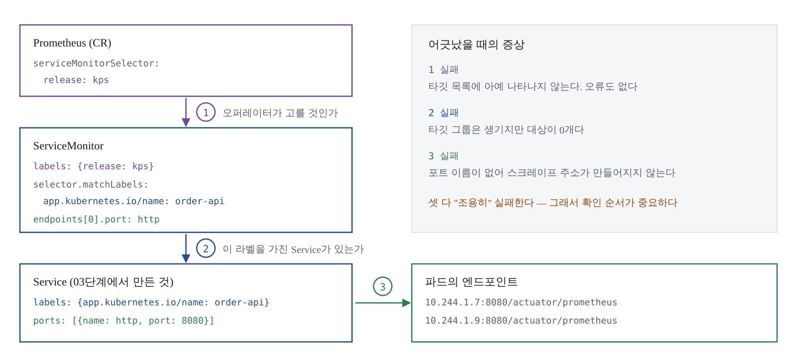
ServiceMonitor는 "이 서비스를 긁어라"라는 선언이다. 효력의 조건 세 가지:
release 라벨 — 오퍼레이터가 프로메테우스 CR의 셀렉터로
ServiceMonitor를 고른다. M3 릴리스 이름이 kps였으므로 release: kpsspec.selector와 Service의 라벨 — ServiceMonitor가 Service를 찾는 고리.
M2 배포 때 app.kubernetes.io/name: order-api를 붙여둔 것endpoints.port와 Service의 포트 이름 — 숫자가 아니라 이름이다.
M2에서 포트에 http라는 이름을 준 이유②와 ③은 M2에서 이미 준비해 뒀다. 이번에 새로 만드는 것은 ①과 ServiceMonitor뿐이다.
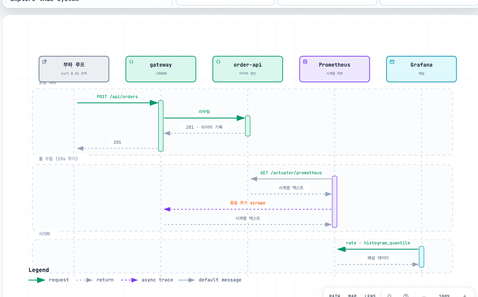
release 라벨 없이 만들어 본다. 5분이면 되고, 이 경험이 앞으로 몇 시간을 아껴준다.
mkdir -p ~/k8s-observability/k8s/monitoring
cd ~/k8s-observability/k8s/monitoring
cat <<'EOF' > 90-servicemonitor-broken.yaml
apiVersion: monitoring.coreos.com/v1
kind: ServiceMonitor
metadata:
name: order-api-broken
namespace: apps
spec:
selector:
matchLabels:
app.kubernetes.io/name: order-api
namespaceSelector:
matchNames: [apps]
endpoints:
- port: http
path: /actuator/prometheus
EOF
kubectl apply -f 90-servicemonitor-broken.yaml
kubectl -n apps get servicemonitor리소스는 정상적으로 만들어진다. 타깃에 나타나는지 확인한다:
sleep 40
curl -s --get http://localhost:30900/api/v1/query \
--data-urlencode 'query=up{namespace="apps"}' \
| jq '.data.result | length'00이다. 오류 메시지도, 경고 로그도 없다. 프로메테우스 CR의 셀렉터를 직접 보면 이유가 드러난다:
kubectl -n monitoring get prometheus -o yaml \
| grep -A4 'serviceMonitorSelector:' serviceMonitorSelector:
matchLabels:
release: kps차트는 serviceMonitorSelectorNilUsesHelmValues: true를 기본으로 둔다.
"이 헬름 릴리스가 관리하는 것만 본다"는 뜻으로, 한 클러스터에 프로메테우스를
여러 개 띄우는 상황(팀별 분리 등)에서 서로의 타깃을 침범하지 않게 하는 장치다.
값 파일에 false를 넣어 무력화할 수도 있지만 실습에서는 넣지 않는다 —
라벨을 붙이는 쪽이 원리를 드러내고, 운영 클러스터에서도 그쪽이 표준이다.
kubectl delete -f 90-servicemonitor-broken.yamlk8s/monitoring/90-servicemonitors.yaml
apiVersion: monitoring.coreos.com/v1
kind: ServiceMonitor
metadata:
name: order-api
namespace: apps
labels:
# ① M3 헬름 릴리스 이름과 일치해야 오퍼레이터가 고른다
release: kps
spec:
# ② 이 라벨을 가진 Service를 찾는다 (M2에서 붙여둔 것)
selector:
matchLabels:
app.kubernetes.io/name: order-api
namespaceSelector:
matchNames:
- apps
endpoints:
# ③ Service의 포트 '이름'이다. 숫자가 아니다.
- port: http
path: /actuator/prometheus
# 전역 설정과 같은 값. 명시해두면 나중에 이 서비스만 조정하기 쉽다.
interval: 30s
scrapeTimeout: 10s
---
apiVersion: monitoring.coreos.com/v1
kind: ServiceMonitor
metadata:
name: gateway
namespace: apps
labels:
release: kps
spec:
selector:
matchLabels:
app.kubernetes.io/name: gateway
namespaceSelector:
matchNames:
- apps
endpoints:
- port: http
path: /actuator/prometheus
interval: 30s
scrapeTimeout: 10skubectl apply -f 90-servicemonitors.yaml
kubectl -n apps get servicemonitor배치 작업처럼 Service를 붙이지 않는 워크로드는 PodMonitor를 쓴다. 구조는 같고 ②번 고리가 Service 대신 파드 라벨로 바뀐다. Service가 있다면 ServiceMonitor가 낫다 — 엔드포인트 정보를 쿠버네티스가 관리해주기 때문이다.
세 단계로 확인한다. 순서가 곧 디버깅 순서다.
1. 타깃이 생겼는가:
sleep 40
curl -s --get http://localhost:30900/api/v1/query \
--data-urlencode 'query=up{namespace="apps"}' \
| jq -r '.data.result[] | "\(.metric.job)\t\(.metric.pod)\t\(.value[1])"'gateway gateway-7d9c4b8f6-qk2xp 1
order-api order-api-6b8f7d5c9-h4nm2 1
order-api order-api-6b8f7d5c9-t8wcv 1파드 3개가 각각 하나의 타깃이다. 서비스가 아니라 파드 단위로 긁는다. 레플리카를 늘리면 타깃도 자동으로 늘어난다.
2. 앱 메트릭이 실제로 들어왔는가:
curl -s --get http://localhost:30900/api/v1/query \
--data-urlencode 'query=orders_created_total' \
| jq -r '.data.result[] | "\(.metric.pod)\t\(.value[1])"'비어 있으면 요청을 몇 번 보내고 40초 기다린다.
3. 오퍼레이터가 만든 설정을 직접 열어보기 — 가장 확실한 디버깅 방법이다. 프로메테우스가 실제로 읽는 설정은 시크릿에 gzip으로 들어 있다:
kubectl -n monitoring get secret prometheus-kps-kube-prometheus-prometheus \
-o jsonpath='{.data.prometheus\.yaml\.gz}' \
| base64 -d | gunzip | grep -A12 'job_name.*order-api' | head -20job_name이 보이면 ①번 고리는 통과다. 여기에 없으면 라벨 문제, 있는데도 타깃이
0개면 ②·③번 문제다. 이 명령 하나로 원인을 절반으로 좁힌다.
앱은 orders_created_total{channel="api"} 하나만 내보냈는데, 저장된 시계열에는
라벨이 훨씬 많다:
{
"__name__": "orders_created_total",
"channel": "api",
"container": "order-api",
"endpoint": "http",
"instance": "10.244.1.7:8080",
"job": "order-api",
"namespace": "apps",
"pod": "order-api-6b8f7d5c9-h4nm2",
"service": "order-api"
}channel만 앱이 붙인 것(M2의 Counter.builder)이고, job은 Service 이름,
namespace·pod·service·container는 쿠버네티스 서비스 디스커버리가 자동으로
부여한다. M2에서 앱에 application=order-api 같은 공통 태그를 넣지 않은 이유가
여기 있다 — 넣었다면 job·service와 의미가 겹치는 라벨이 세 개가 되고, 질의마다
무엇으로 묶을지 고민하다 팀원마다 다른 라벨을 쓰기 시작한다. 쿠버네티스에서는
수집 계층이 붙여주는 라벨을 표준으로 삼는 것이 깔끔하다.
localhost:30900/graph에 직접 입력하며 읽는다. 필요한 개념은 네 개뿐이다.
1. 카운터는 그대로 보면 쓸모가 없다. 계속 오르기만 하는 누적값이기 때문이다.
거의 항상 rate()를 씌운다. 대괄호 안의 시간은 "이만큼을 돌아보며 평균 낸다"는
뜻이고, 스크레이프 간격의 4배 이상을 권장한다. 우리는 30초 간격이므로 최소 2분.
2. sum by — 필요한 축만 남긴다:
# 파드별로 흩어진 값을 서비스 단위로 합친다
sum by (service) (rate(orders_created_total[2m]))
# by 대신 without을 쓰면 "이 라벨만 빼고 나머지로 묶어라"
sum without (pod, instance) (rate(orders_created_total[2m]))3. 히스토그램에서 분위수 뽑기. 왜 평균이 아니라 분위수인가 — 요청 100건 중 99건이 10ms, 1건이 3초면 평균은 40ms다. 대시보드는 초록색이고, 그 1건을 겪은 사용자는 이탈한다. P99를 보면 3초가 그대로 드러난다.
# le(less or equal) 라벨을 반드시 남겨야 한다. 빠지면 계산이 안 된다.
histogram_quantile(
0.95,
sum by (le, service) (rate(http_server_requests_seconds_bucket{namespace="apps"}[5m]))
)Prometheus 3.8부터 네이티브 히스토그램이 정식 기능이 됐고 버킷 시계열 폭증 문제를
근본적으로 줄여준다. 다만 그라파나 패널과 기존 대시보드가 아직 고전 버킷 기준인
경우가 많아 이 실습은 고전 버킷(_bucket)으로 진행한다. 전환 판단은 M7에서.
4. 비율 계산에서 조심할 것 — 트래픽이 없으면 분모가 0이 되어 결과가 비어버린다. 대시보드 'No data'의 흔한 원인이다.
아래 질의들이 M5 대시보드의 패널이 된다.
R — 서비스별 초당 요청 수:
sum by (service) (
rate(http_server_requests_seconds_count{namespace="apps"}[2m])
)E — 서비스별 5xx 비율(%):
100 * (
sum by (service) (
rate(http_server_requests_seconds_count{namespace="apps", status=~"5.."}[5m])
)
/
sum by (service) (
rate(http_server_requests_seconds_count{namespace="apps"}[5m])
)
)D — 서비스별 P95 응답 시간(초):
histogram_quantile(
0.95,
sum by (le, service) (
rate(http_server_requests_seconds_bucket{namespace="apps"}[5m])
)
)D 심화 — 엔드포인트별 P99, 느린 순서대로:
topk(5,
histogram_quantile(
0.99,
sum by (le, uri) (
rate(http_server_requests_seconds_bucket{namespace="apps", service="order-api"}[5m])
)
)
)uri 라벨이 /api/orders/{id}처럼 템플릿으로 찍혀 있는 것을 확인한다.
M2에서 @PathVariable로 매핑한 덕분이다 — ID가 그대로 찍혔다면 시계열이
주문 수만큼 늘어났을 것이다.
비즈니스 지표 — 분당 주문 수와 거부율:
sum(rate(orders_created_total[5m])) * 60
100 * (
sum(rate(orders_rejected_total[5m]))
/
(sum(rate(orders_created_total[5m])) + sum(rate(orders_rejected_total[5m])))
)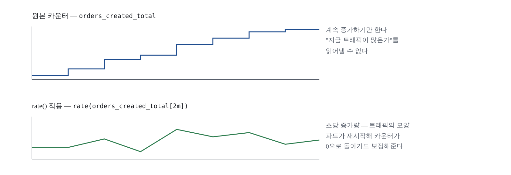
서비스를 둘로 나눈 이유를 확인할 차례다. 백엔드를 느리게 만들고 게이트웨이의 지연이 어떻게 따라 움직이는지 본다.
# 터미널 1 — 평상시 트래픽을 계속 흘린다
while true; do
curl -s -o /dev/null -X POST http://localhost:30080/api/orders \
-H 'Content-Type: application/json' \
-d '{"item":"latte","quantity":2}'
sleep 0.3
done# 터미널 2 — 3분 동안 느린 요청을 섞는다
end=$((SECONDS+180))
while [ "$SECONDS" -lt "$end" ]; do
curl -s -o /dev/null "http://localhost:30080/api/chaos/slow?ms=900"
sleep 1
done
echo "지연 주입 종료"두 질의를 그래프에 함께 띄워 비교한다:
# 게이트웨이가 본 P95 (클라이언트 관점)
histogram_quantile(0.95,
sum by (le) (rate(http_server_requests_seconds_bucket{service="gateway"}[2m]))
)
# 백엔드가 본 P95 (서버 관점)
histogram_quantile(0.95,
sum by (le) (rate(http_server_requests_seconds_bucket{service="order-api"}[2m]))
)패턴 해석: 두 값이 거의 같이 오르면 백엔드가 원인이고 게이트웨이는 기다렸을 뿐이다.
게이트웨이만 오르고 백엔드가 평온하면 게이트웨이 자체 병목(커넥션 풀, CPU, 라우팅
필터)을 의심한다. 백엔드만 오르고 게이트웨이가 그대로면 느린 경로가 게이트웨이를
거치지 않았거나 타임아웃으로 잘리고 있다. 게이트웨이의 라우트 단위 지표
spring_cloud_gateway_requests_seconds_bucket(라벨 routeId)으로 한 번 더
확인할 수 있다.
실습이 끝나면 반드시 터미널 1의 부하 루프를 Ctrl+C로 끈다. 켜둔 채 잊으면 노트북 팬이 계속 돌고, 프로메테우스 저장 공간(M3에서 8Gi)이 예상보다 빨리 찬다.
앱 메트릭이 붙는 순간 시계열 개수가 급증한다. http_server_requests_seconds_bucket
하나가 (엔드포인트 수) × (상태 코드 수) × (버킷 수) × (파드 수)만큼의 시계열을
만든다. 실습 규모에서는 문제없지만, 운영에서 uri 태그에 ID가 섞이는 순간
프로메테우스가 메모리 부족으로 죽는다. M7의 주제다. 지금 수치를 적어두면 나중에
비교하기 좋다:
prometheus_tsdb_head_series
topk(10, count by (__name__) ({__name__=~".+"}))자주 겪는 문제 요지: 타깃 목록에 앱이
아예 없으면 ①번 고리(release 라벨), 타깃 그룹은 있는데 대상이 0개면 ②번 고리
(Service 라벨), 404면 path와 exposure 설정, _bucket만 없으면 M2의
percentiles-histogram 설정, histogram_quantile이 NaN이면 sum by에서 le 누락.
release 라벨 없이 만들면 타깃이 안 생긴다는 것을 직접 확인했다up{namespace="apps"} 결과가 파드 3개 모두 1이다job_name을 확인했다job·namespace·pod·service 라벨이 붙어 있다uri 라벨이 /api/orders/{id} 형태로 템플릿화되어 있다이 모듈이 남기는 것: 90-servicemonitors.yaml, 그리고 질의 6개(RED 3 + P99 심화 +
비즈니스 2). 질의들을 팀 저장소 메모에 정리해 둔다 — M5에서 그대로 패널이 된다.
M5에서는 이 질의들을 M3의 프로비저닝 방식으로 대시보드에 옮기고, 변수
(namespace·service)를 넣어 하나의 대시보드로 여러 서비스를 본다. 그리고
PrometheusRule로 알림 규칙을 선언한 뒤 Alertmanager에서 라우팅한다. 기술보다
어려운 질문 — "알림을 몇 개 만들 것인가" — 도 함께 다룬다.
M4를 끝낸 시점에서 RED 질의 6개는 동작한다. 문제는 그것이 Explore 화면과 각자의 기억 속에만 있다는 점이다. 새벽 2시에 장애가 나면 질의를 다시 타이핑할 사람은 없다. "지금 문제가 있는가"를 3초 안에 답하는 화면이 미리 만들어져 있어야 하고, 그 화면조차 사람이 계속 쳐다볼 수는 없으니 임계값을 넘으면 시스템이 먼저 말을 걸어야 한다. 질의를 대시보드 패널과 알림 규칙으로 옮기는 것이 이번 모듈이다.
기술적으로는 어렵지 않다. 어려운 것은 무엇을 넣지 않을지 정하는 일이다. 패널 30개짜리 대시보드와 알림 40개는 아무도 보지 않게 되고, 결국 없는 것과 같아진다. 이 모듈의 이론 파트는 전부 이 "빼는 기준"에 관한 것이다.
먼저 흔한 반문 하나. "파드가 실패할 때마다 알림을 보내면 안 되나?" 안 된다. 쿠버네티스의 꽃은 컨테이너 상태를 자동으로 체크하고 알아서 재시작하는 기능이다. 시스템이 스스로 고치는 일에 사람을 깨우면, 정작 사람이 필요한 이벤트가 그 소음에 파묻힌다. 알림이 너무 많으면 받는 사람이 무감각해진다 — 알림 피로는 담당자와 프로세스 모두를 해친다.
그럼 기준은 무엇인가. 답은 SLO(Service-Level Objective)다. 유저는 SLO에 영향을 미치는 이벤트만 알림 받고 싶어 한다. 예를 들어 응답 시간 SLO가 20ms인 프론트엔드에서 레이턴시가 평균 이상으로 측정되면 즉시 알림을 받아 조치해야 한다. 반대로 SLO가 없으면 "시스템이 어때야 정상인가"의 기준이 없으므로, 비현실적인 기대치를 들이대는 무리한 요구와 싸우게 된다.
사람이 개입할 필요가 없는 문제는 알림 대신 자동 조치로 돌린다. 디스크가 차면 로그를 자동 삭제하고, 미응답 프로세스는 라이브니스 프로브가 재시작한다. M2에서 프로브 3종을 심은 것이 바로 이 원칙의 구현이었다.
임계치 설계의 기준 숫자. 지속 시간이 너무 짧으면 한 번 튄 값에도 알림이 울린다 — 최소 5분 이상을 권하고, 5분/10분/30분/1시간처럼 패턴을 표준화해 수십 개 임계치를 개별 관리하는 부담을 없앤다. 알림 본문에는 플레이북 링크, 지역, 앱 소유자, 영향 시스템 같은 맥락을 싣는다. 라우팅은 실제로 그 문제를 해결할 사람에게만 — 팀 전체 이메일로 뿌리는 알림은 곧 노이즈로 분류되어 걸러진다.
마지막 원칙: 완벽한 알림은 없다. 처음부터 완벽을 논하는 것 자체가 어불성설이며, 점진적으로 개선하는 것이 바람직하다. 더 깊이 보려면 구글 SRE 롭 에와슈크의 「My Philosophy on Alerting」을 읽어보라.
대시보드 쪽 이론은 한 문장이다. 대시보드를 너무 많이 만드는 것을 그래프의 장벽(The Wall of Graphs)이라 부른다. 정보가 많으면 모니터링이 잘 되는 것 같지만 트러블슈팅할 때 오히려 방해가 된다. 대시보드는 결과와 문제 해결 시간에 초점을 두고 설계한다. 실습의 RED 대시보드가 패널 7개로 끝나는 이유다. JVM 힙이나 GC는 이 화면에 없다 — "응답이 느리다"를 확인한 다음에 보는 지표이므로 별도의 심층 대시보드 몫이다.
서비스마다 대시보드를 복제하면 관리가 무너진다. 변수 세 개로 화면 하나가 모든 서비스를 커버한다.
| 변수 | 타입 | 정의 |
|---|---|---|
| datasource | datasource | 데이터소스 선택. uid를 고정하지 않아도 어느 환경에서나 동작 — 이식성의 핵심 |
| namespace | query | label_values(http_server_requests_seconds_count, namespace) |
| service | query | label_values(http_server_requests_seconds_count{namespace="$namespace"}, service) — 다중 선택과 All 허용 |
M3에서는 datasource 필드를 아예 생략해 기본 데이터소스를 쓰게 했다.
패널만 있을 때는 충분하지만, 쿼리 변수는 데이터소스를 명시해야 값을 채울 수 있다.
그래서 datasource 타입 변수를 만들고 ${datasource}로 참조한다 — uid를 박아넣지
않으면서 변수가 동작한다.
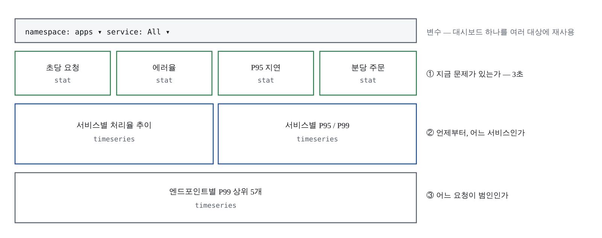
monitoring/dashboards/obs-red.json은 패널 7개다: 초당 요청 수 / 5xx 에러율 /
P95 응답 시간 / 분당 주문 수(stat 4개), 서비스별 처리율 / 서비스별 P95·P99 /
엔드포인트별 P99 상위 5개(timeseries 3개). JSON 전문은 실습 코드 저장소에 있다 —
질의는 전부 M4에서 만든 것이고, 새로 등장하는 것은 배치와 변수 참조뿐이다.
한 군데만 뜯어보자. 5xx 에러율 패널의 질의 끝에 붙은 or vector(0):
100 * (sum(rate(http_server_requests_seconds_count{namespace="$namespace", service=~"$service", status=~"5.."}[5m]))
/ sum(rate(http_server_requests_seconds_count{namespace="$namespace", service=~"$service"}[5m])) or vector(0))트래픽이 없을 때 No data 대신 0을 표시한다. 대시보드에서 빈 값과 0은 전혀 다른 의미이므로, 어느 쪽으로 보일지를 의식적으로 정해야 한다.
배포는 M3에서 만든 사이드카 경로 그대로다:
cd ~/k8s-observability/monitoring
kubectl -n monitoring create configmap obs-red-dashboard \
--from-file=obs-red.json=dashboards/obs-red.json \
--dry-run=client -o yaml | kubectl apply -f -
kubectl -n monitoring label configmap obs-red-dashboard \
grafana_dashboard=1 --overwrite
kubectl -n monitoring annotate configmap obs-red-dashboard \
grafana_folder="Obs Study" --overwrite
# 사이드카가 집었는지
kubectl -n monitoring logs -l app.kubernetes.io/name=grafana \
-c grafana-sc-dashboard --tail=10그라파나에서 Obs Study → Obs Study — 서비스 RED 를 연다. 상단 변수 드롭다운에
apps와 서비스 목록이 채워져 있으면 정상이다. 변수가 비어 있다면 —
label_values()는 해당 메트릭이 존재해야 값을 반환한다. M4 이후 트래픽이 없었다면
프로메테우스가 오래된 시계열을 이미 잊었을 수 있다. 요청을 몇 번 보내고 1분 뒤
새로고침한다.
알림은 "질의 결과가 비어 있지 않으면 발생"이라는 단순한 규칙이다. 핵심은 for다.
이 값이 없으면 한 번 튄 값에도 알림이 울린다 — 임계치 원칙이 문법
한 줄로 구현되는 자리다.
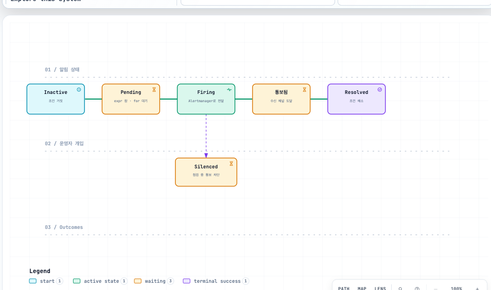
k8s/monitoring/91-prometheusrule.yaml
apiVersion: monitoring.coreos.com/v1
kind: PrometheusRule
metadata:
name: obs-study-app-rules
namespace: apps
labels:
# ServiceMonitor와 같은 이유로 필요하다 (M4의 라벨 연결 고리)
release: kps
spec:
groups:
- name: obs-study-app
# 이 그룹의 규칙을 얼마나 자주 평가할지
interval: 30s
rules:
- alert: AppTargetDown
expr: up{namespace="apps"} == 0
for: 1m
labels:
severity: critical
annotations:
summary: "{{ $labels.service }} 스크레이프 실패"
description: "{{ $labels.pod }} 를 1분 이상 긁지 못하고 있습니다."
- alert: AppHighErrorRate
expr: |
100 * (
sum by (service) (
rate(http_server_requests_seconds_count{namespace="apps", status=~"5.."}[5m])
)
/
sum by (service) (
rate(http_server_requests_seconds_count{namespace="apps"}[5m])
)
) > 5
for: 2m
labels:
severity: warning
annotations:
summary: "{{ $labels.service }} 에러율 {{ $value | printf \"%.1f\" }}%"
description: "5xx 비율이 2분 이상 5%를 넘고 있습니다."
- alert: AppHighLatencyP95
expr: |
histogram_quantile(0.95,
sum by (le, service) (
rate(http_server_requests_seconds_bucket{namespace="apps"}[5m])
)
) > 0.5
for: 3m
labels:
severity: warning
annotations:
summary: "{{ $labels.service }} P95 {{ $value | printf \"%.2f\" }}초"
description: "P95 응답 시간이 3분 이상 500ms를 넘고 있습니다."
- alert: OrderRejectionSpike
expr: sum(rate(orders_rejected_total[5m])) > 0.2
for: 5m
labels:
severity: info
annotations:
summary: "주문 거부가 늘고 있습니다"
description: "초당 거부 건수가 5분 이상 0.2를 넘습니다. 클라이언트 오류 가능성."위 숫자(5%, 500ms)는 예시일 뿐이다. 실제로는 과거 데이터를 보고 정한다 — 평소 P95가 200ms인 서비스에 500ms 임계값은 합리적이지만, 평소가 800ms인 서비스에는 매분 울리는 알림이 된다. M4에서 만든 그래프를 며칠 관찰한 뒤 정하는 것이 정석이고, 급하면 "평소값의 2~3배"에서 시작해 조정한다.
위 매니페스트에서 release: kps 라벨을 지우고 적용해 보자:
# metadata.labels의 release: kps 를 주석 처리한 뒤
kubectl apply -f 91-prometheusrule.yaml
sleep 40
curl -s http://localhost:30900/api/v1/rules \
| jq -r '.data.groups[] | select(.name=="obs-study-app") | .rules[] | "\(.name)\t\(.state)"'아무것도 나오지 않는다. 에러도 없다. kubectl apply는 성공했고 리소스는 클러스터에
멀쩡히 존재하는데, 프로메테우스는 이 규칙을 읽지 않는다. M4에서 ServiceMonitor가
조용히 무시되던 것과 완전히 같은 이유다 — 오퍼레이터는 release: kps 라벨이 붙은
리소스만 골라 읽도록 설정돼 있다. "오류 없이 조용히 실패한다"는 이 스택에서 가장
자주 밟는 지뢰이고, 라벨 한 줄이 원인이라는 것을 몸으로 기억해 두면 운영에서
수십 분을 아낀다.
라벨을 되살리고 다시 적용한다:
kubectl apply -f 91-prometheusrule.yaml
sleep 40
curl -s http://localhost:30900/api/v1/rules \
| jq -r '.data.groups[] | select(.name=="obs-study-app") | .rules[] | "\(.name)\t\(.state)"'AppTargetDown inactive
AppHighErrorRate inactive
AppHighLatencyP95 inactive
OrderRejectionSpike inactive네 개가 모두 보이면 성공이다.
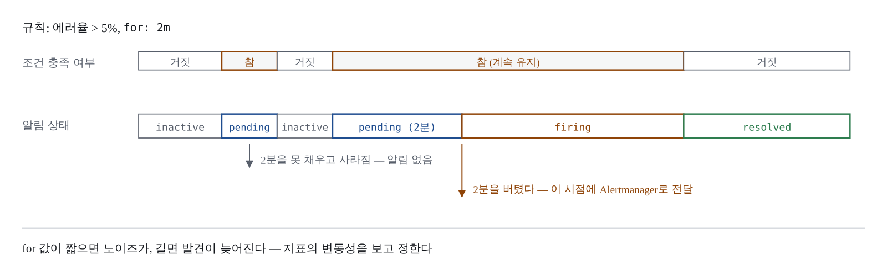
프로메테우스는 알림을 발생시키고, Alertmanager는 그것을 묶고 억제하고 보낸다.
monitoring/kps-values.yaml의 alertmanager 블록을 교체한다 (전문은 실습 코드 저장소에):
alertmanager:
alertmanagerSpec:
nodeSelector:
workload: observability
resources:
requests: { cpu: 20m, memory: 96Mi }
limits: { memory: 192Mi }
# 이 블록을 쓰면 차트 기본 설정을 전부 대체한다.
# Watchdog 처리와 억제 규칙을 빠뜨리면 안 되는 이유다.
config:
global:
resolve_timeout: 5m
route:
group_by: ["namespace", "alertname"]
group_wait: 30s
group_interval: 5m
repeat_interval: 4h
receiver: study-default
routes:
# Watchdog은 "모니터링이 살아있다"를 알리는 상시 알림이다. 버린다.
- receiver: "null"
matchers:
- alertname =~ "InfoInhibitor|Watchdog"
- receiver: study-critical
matchers:
- severity = "critical"
# critical이 울리는 동안 같은 대상의 warning/info는 숨긴다
inhibit_rules:
- source_matchers: [ severity = "critical" ]
target_matchers: [ severity =~ "warning|info" ]
equal: ["namespace", "alertname"]
receivers:
- name: "null"
- name: study-default
- name: study-criticalhelm upgrade kps prometheus-community/kube-prometheus-stack \
--namespace monitoring --version 88.3.0 \
-f kps-values.yaml --wait --timeout 10m라우팅이 의도대로인지는 알림을 터뜨리지 않고도 확인할 수 있다. Alertmanager
이미지에 amtool이 들어 있다:
AM_POD=$(kubectl -n monitoring get pod \
-l app.kubernetes.io/name=alertmanager \
-o jsonpath='{.items[0].metadata.name}')
CFG=/etc/alertmanager/config_out/alertmanager.env.yaml
kubectl -n monitoring exec "$AM_POD" -c alertmanager -- \
amtool config routes test --config.file="$CFG" \
severity=critical namespace=apps alertname=AppTargetDownstudy-critical이 출력되면 라우팅이 맞다.
에러를 3분 이상 계속 만든다 (임계값 5%, for: 2m):
end=$((SECONDS+240))
while [ "$SECONDS" -lt "$end" ]; do
curl -s -o /dev/null "http://localhost:30080/api/chaos/error?rate=0.8"
sleep 0.5
done
echo "에러 주입 종료"다른 터미널에서 상태 변화를 지켜본다:
watch -n 10 "curl -s http://localhost:30900/api/v1/rules \
| jq -r '.data.groups[] | select(.name==\"obs-study-app\") | .rules[] | \"\(.name)\t\(.state)\"'"inactive → pending → firing 순으로 바뀐다. pending에서 firing까지 2분이
걸리는 것을 확인하라 — for: 2m의 효과다. Alertmanager까지 도달했는지:
kubectl -n monitoring port-forward svc/kps-kube-prometheus-alertmanager 9093:9093 >/dev/null 2>&1 &
sleep 2
curl -s http://localhost:9093/api/v2/alerts \
| jq -r '.[] | "\(.labels.alertname)\t\(.labels.severity)\t\(.status.state)"'Watchdog도 함께 보이는데 정상이다 — 목록에는 남고 통보만 되지 않는다는 점을 확인하라. 계획된 배포나 실습 중에는 Alertmanager UI의 Silences로 알림을 잠시 꺼두는 것이 정상적인 운영이다. "시끄러우니 규칙을 지운다"와 "잠시 침묵시킨다"는 완전히 다르다. 전자는 다시 켜지지 않는다.
성공 판정:
/api/v1/rules에서 규칙 4개가 조회된다amtool config routes test가 study-critical을 출력한다실습이 끝나면 에러 주입 루프와 포트포워드를 반드시 종료한다 (kill %1).
루프를 켜둔 채 다음 모듈로 넘어가면 로그 실습에서 에러가 계속 찍혀 판독을 방해한다.
kube-prometheus-stack은 이미 수십 개의 기본 규칙을 설치했다. 거기에 우리 규칙을 얹으면 금세 백 개가 넘는다. 기준 네 가지:
| 기준 | 내용 |
|---|---|
| 사람이 행동할 수 있는가 | 받고 나서 할 일이 없다면 알림이 아니라 대시보드 패널이어야 한다. 이것 하나만 지켜도 알림 수가 절반으로 준다 |
| 증상인가 원인인가 | "P95가 느리다"(증상)로 알리고, "GC가 잦다"(원인)는 대시보드에서 찾는다. 원인마다 알림을 만들면 하나의 장애에 알림 열 개가 쏟아진다 |
| 야간에 깨울 만한가 | severity를 나누는 실질적 기준. critical만 호출하고 warning은 근무 시간에 본다 |
| 지난달에 울렸는가 | 한 번도 안 울린 알림과 매일 울린 알림은 둘 다 문제다. 정기적으로 발생 이력을 검토해 정리한다 |
Grafana Alerting이라는 대안도 있다. 여러 데이터소스를 한 규칙에서 조합할 수 있어 로그·트레이스까지 섞어 판단해야 할 때 유리하다. 이 실습이 Alertmanager를 택한 이유는 규칙이 PrometheusRule이라는 클러스터 리소스로 남아 저장소에서 이력을 추적할 수 있기 때문이다. 둘을 동시에 쓰는 것은 권하지 않는다 — 같은 장애에 두 경로로 알림이 오면 "이건 어디서 온 알림이지"부터 확인하게 된다.
이 모듈이 남기는 파일: monitoring/dashboards/obs-red.json,
k8s/monitoring/91-prometheusrule.yaml, monitoring/kps-values.yaml(alertmanager 블록).
셋 다 팀 저장소에 커밋한다.
메트릭으로 "무언가 이상하다"까지 왔다. firing 알림을 받고 대시보드를 열면 어느
서비스의 무엇이 나쁜지는 보이는데, 왜 그런지는 여기 없다. 다음 질문 "무슨 일이
있었나"는 로그의 몫이다 — M6에서 로키를 설치하고 Alloy로 파드 로그를 수집한 뒤,
방금 만든 RED 대시보드와 같은 시간축에 로그를 놓는다. 차트 저장소는
grafana-community, 수집기는 Alloy라는 점을 미리 기억해 두라.
메트릭이 이상을 알려주고, 로그가 이유를 말해준다. 지금까지 만든 것은 전부 앞 절반이었다. 알림이 firing으로 바뀌고 RED 대시보드가 에러율 급등을 그려도, 거기서 알 수 있는 것은 "order-api가 14시 02분부터 5xx를 뱉는다"까지다. 그 순간 애플리케이션 안에서 무슨 일이 있었는지 — 어떤 예외가, 어떤 요청에서, 어떤 스택트레이스와 함께 — 는 메트릭에 없다. 수치로 집계되는 순간 개별 사건의 맥락은 버려지기 때문이다. 그 맥락이 로그다.
파드의 레이턴시가 높게 나타나면 메트릭만으로는 원인 파악이 어렵고, 애플리케이션이 기록한 로그를 살펴보며 에러를 조사한다. 이번 모듈의 목적지는 조사 동선을 한 화면으로 줄이는 것 — 메트릭 그래프와 로그를 같은 시간축에 놓는다. "그래프가 언제 튀었나" → "그때 무슨 로그가 찍혔나"가 스크롤 한 번에 이어지게 만든다.
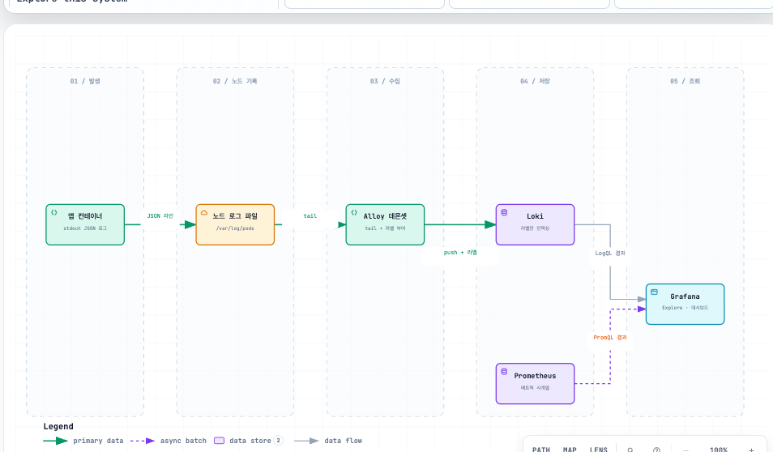
"모든 걸 다 로깅하자"는 두 가지로 망한다. 노이즈가 너무 많아 문제를 빠르게 찾기 힘들어지고, 로그가 과도한 리소스를 소모해 비용이 커진다. 무엇을 로깅할지에 정답은 없다 — 환경을 더 잘 알게 될수록 어떤 노이즈를 걸러낼지 감을 잡게 된다. 대신 보존 기간에는 구체적 기준이 있다: 엔드 유저 관점에서 30~45일이면 충분하다. 이 정도면 꽤 긴 시간에 걸쳐 문제를 조사할 수 있고 보관 리소스도 줄인다. 컴플라이언스로 장기 보존이 필요하면(예: 전자금융거래기록 5년) 더 저렴한 리소스로 옮긴다.
쿠버네티스 클러스터에서 수집할 로그는 네 종류다. 노드 로그(컨테이너 데몬 등 필수 노드 서비스), 컨트롤 플레인 로그(API 서버·컨트롤러 매니저·스케줄러 — LoadBalancer 서비스가 대기 상태로 멈춰 있을 때 이벤트만으로는 원인을 모르고 컨트롤러 매니저 로그가 필요하다), 감사 로그(누가 언제 무엇을 했나 — 노이즈가 극심해 반드시 환경에 맞게 조정), 그리고 애플리케이션 컨테이너 로그. 이 실습은 넷 중 마지막에 집중한다.
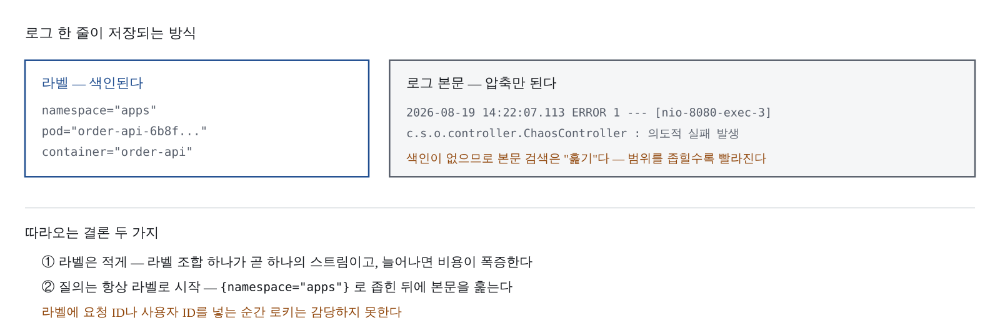
앱 로그를 모으는 방식은 둘이고, 권장은 분명하다. 모든 로그를 STDOUT으로 보내고 노드마다 뜨는 수집기(데몬셋)가 걷어가게 한다. 애플리케이션을 일관되게 로깅할 수 있고, 앱 코드는 파일 관리에서 해방된다. 사이드카 패턴(파드 안에 로그 전달용 컨테이너를 나란히 붙이는 것)은 앱이 파일에만 로그를 쓸 때의 차선책인데, 로그 전달기가 파드 수만큼 늘어나 리소스를 많이 먹으므로 가급적 제한한다.
로깅 툴을 고를 때의 평가 기준: 데몬셋으로 실행 가능한지, STDOUT 불가 앱에 사이드카로 붙일 수 있는지, 기존 운영 노하우가 있는지. 자체 호스팅한 로깅 솔루션은 처음엔 그럴싸해도 환경이 커질수록 관리 시간이 막대해지므로 호스티드 서비스도 검토 대상이다. 이 실습이 로키를 쓰는 이유는 설계 하나로 요약된다 — 엘라스틱서치는 로그 본문 전체를 색인한다. 검색은 빠르지만 저장 비용이 크다. 로키는 반대로 라벨만 색인하고 본문은 압축해 보관한다. 이 설계가 사용법의 거의 모든 것을 결정한다. 프로메테우스의 카디널리티 문제와 정확히 같은 구조이기도 하다: M4에서 배운 "라벨 값은 유한한 집합이어야 한다"는 원칙이 로그에도 그대로 적용된다.
수집 스택은 Alloy(수집기) → Loki(저장) → Grafana(조회)로 구성한다.
로키 헬름 차트는 grafana-community 저장소에 있다 — grafana/loki 경로로는
원하는 차트를 받지 못하니 설치 전에 helm search repo로 확인한다.
로키 스택은 메모리 여유가 2 GiB 이상 필요하다. 부족하면 파드가 Evicted된다.
helm repo update
helm search repo grafana-community/loki --versions | head -3실습에서는 단일 바이너리 모드 + 파일시스템 저장을 쓴다. 공식 예제는 MinIO를 쓰지만, 파드가 하나 더 늘고 MinIO 서브차트는 폐기 예정이라 로컬 실습에서 굳이 쓸 이유가 없다.
monitoring/loki-values.yaml
deploymentMode: Monolithic
loki:
# 멀티테넌시를 끈다. 켜면 모든 요청에 X-Scope-OrgID 헤더가 필요해진다.
auth_enabled: false
commonConfig:
path_prefix: /var/loki
# 단일 인스턴스이므로 1. 기본값(3)이면 기동하지 못한다.
replication_factor: 1
storage:
type: filesystem
# 파일시스템을 써도 차트 템플릿이 이 값을 참조한다. 비워두면 렌더링이 깨질 수 있다.
bucketNames:
chunks: chunks
ruler: ruler
# 최근 차트는 schemaConfig를 명시하지 않으면 설치가 실패한다.
schemaConfig:
configs:
- from: "2024-04-01"
store: tsdb
object_store: filesystem
schema: v13
index:
prefix: loki_index_
period: 24h
limits_config:
# 구조화 메타데이터 — 라벨을 늘리지 않고 필드를 붙이는 방법 (3.5절 참조)
allow_structured_metadata: true
volume_enabled: true
retention_period: 72h
singleBinary:
replicas: 1
persistence:
enabled: true
size: 10Gi
resources:
requests: { cpu: 100m, memory: 384Mi }
limits: { memory: 900Mi }
# ── 다른 배포 모드의 파드가 뜨지 않도록 0으로 ──
backend: { replicas: 0 }
read: { replicas: 0 }
write: { replicas: 0 }
ingester: { replicas: 0 }
querier: { replicas: 0 }
queryFrontend: { replicas: 0 }
queryScheduler: { replicas: 0 }
distributor: { replicas: 0 }
compactor: { replicas: 0 }
indexGateway: { replicas: 0 }
bloomPlanner: { replicas: 0 }
bloomBuilder: { replicas: 0 }
bloomGateway: { replicas: 0 }
# ── 노트북을 지키기 위한 설정 ──
# 캐시는 memcached 파드를 띄우며 기본 요청 메모리가 크다. 실습에서는 끈다.
chunksCache: { enabled: false }
resultsCache: { enabled: false }
lokiCanary: { enabled: false }
test: { enabled: false }
# 관측 스택은 obs-worker2에 모은다
gateway:
nodeSelector:
workload: observabilitycd ~/k8s-observability/monitoring
helm upgrade --install loki grafana-community/loki \
--namespace logging --create-namespace \
-f loki-values.yaml \
--wait --timeout 10m
kubectl -n logging get pods
loki-0과 loki-gateway-... 두 개면 정상이다. loki-read·loki-write·loki-backend가
보인다면 배포 모드 설정이 먹지 않은 것이니 값 파일을 다시 확인한다.
Alloy 차트는 grafana 저장소에 있다. 로키 차트만 커뮤니티로 옮겨갔다.
헷갈리기 쉬우니 helm search repo로 한 번 확인하고 진행한다.
helm repo add grafana https://grafana.github.io/helm-charts
helm repo update
helm search repo grafana/alloy --versions | head -3monitoring/alloy-values.yaml
alloy:
configMap:
content: |-
logging {
level = "info"
format = "logfmt"
}
// 1) 클러스터의 파드를 발견한다
discovery.kubernetes "pods" {
role = "pod"
}
// 2) 어떤 라벨을 붙일지 고른다. 여기서 고르지 않은 메타데이터는 버려진다.
discovery.relabel "pod_logs" {
targets = discovery.kubernetes.pods.targets
rule {
source_labels = ["__meta_kubernetes_namespace"]
target_label = "namespace"
}
rule {
source_labels = ["__meta_kubernetes_pod_name"]
target_label = "pod"
}
rule {
source_labels = ["__meta_kubernetes_pod_container_name"]
target_label = "container"
}
rule {
source_labels = ["__meta_kubernetes_pod_label_app_kubernetes_io_name"]
target_label = "app"
}
}
// 3) 쿠버네티스 API로 로그를 읽는다 (호스트 경로 마운트가 필요 없다)
loki.source.kubernetes "pods" {
targets = discovery.relabel.pod_logs.output
forward_to = [loki.write.default.receiver]
}
// 4) 로키로 밀어 넣는다
loki.write "default" {
endpoint {
url = "http://loki-gateway.logging.svc.cluster.local/loki/api/v1/push"
}
}
resources:
requests: { cpu: 50m, memory: 128Mi }
limits: { memory: 256Mi }
# 노드마다 하나씩 뜨는 DaemonSet이 기본값이다
controller:
type: daemonset
STDOUT 원칙이 여기서 코드가 된다 — 데몬셋 수집기가 노드에서 STDOUT 로그를
걷는다. 애플리케이션 코드는 한 줄도 바뀌지 않는다. loki.source.kubernetes는
쿠버네티스 API를 통해 로그를 읽으므로 /var/log 호스트 마운트가 필요 없다 —
macOS의 도커 VM 환경에서 문제가 덜 생기는 방식이다.
helm upgrade --install alloy grafana/alloy \
--namespace logging \
-f alloy-values.yaml \
--wait --timeout 5m
kubectl -n logging get pods -o wide
# Alloy가 로그를 밀어 넣고 있는지 자체 로그로 확인
kubectl -n logging logs -l app.kubernetes.io/name=alloy --tail=20 | head -20
# Alloy UI로 파이프라인 상태를 눈으로 본다 (컴포넌트별 healthy 여부)
kubectl -n logging port-forward svc/alloy 12345:12345 >/dev/null 2>&1 &
sleep 2
open http://localhost:12345Alloy 파드가 노드 수만큼(3개) 떠야 한다. Alloy UI를 꼭 한 번 열어보라 — 컴포넌트가 그래프로 그려지고 각각의 상태와 처리 건수가 보인다. "로그가 안 들어온다"는 상황에서 어느 단계가 끊겼는지 즉시 알 수 있어, 설정 파일을 노려보는 것보다 훨씬 빠르다.
M3에서 정한 원칙대로 UI에서 추가하지 않고 값 파일에 선언한다.
monitoring/kps-values.yaml의 grafana 블록에 추가:
grafana:
additionalDataSources:
- name: Loki
type: loki
uid: loki
access: proxy
# 그라파나 파드에서 접근하는 주소다. 브라우저 주소가 아니다.
url: http://loki-gateway.logging.svc.cluster.local
jsonData:
# 한 번에 가져올 로그 줄 수 상한
maxLines: 1000helm upgrade kps prometheus-community/kube-prometheus-stack \
--namespace monitoring --version 88.3.0 \
-f kps-values.yaml --wait --timeout 10m그라파나 Connections → Data sources에 Loki가 보이고 Save & test가 통과하면 된다.
그라파나 Explore에서 데이터소스를 Loki로 바꾸고 차례로 입력한다. PromQL과 닮았지만 반드시 라벨 셀렉터로 시작해야 한다는 점이 다르다 — 라벨만 색인하는 설계의 직접적 결과다.
# 1. 스트림 고르기
{namespace="apps"}
{namespace="apps", app="order-api"}
# 2. 본문 훑기
{namespace="apps"} |= "ERROR"
{namespace="apps"} |= "ERROR" != "ChaosController"
{namespace="apps"} |~ "(?i)exception|error"
# 3. 로그를 숫자로 바꾸기
sum by (pod) (count_over_time({namespace="apps"} |= "ERROR" [5m]))
sum(rate({namespace="apps"} |= "ERROR" [5m]))
rate()를 씌우는 순간 로그가 시계열이 된다 — 로그 기반으로도 알림을 만들 수
있다는 뜻이다. 다만 메트릭으로 잡을 수 있는 것을 굳이 로그로 세지는 마라.
비용도 지연도 로그 쪽이 훨씬 크다. "메트릭에 없는 사건"에만 쓰는 것이 원칙이다.
지금 로그는 사람이 읽기 좋은 텍스트다. | json으로 필드를 뽑으려면 앱이 JSON으로
찍어야 하는데, Spring Boot는 설정 한 줄로 지원한다 —
logging.structured.format.console: ecs를 order-api의 application.yml에 넣고
M2의 redeploy.sh로 재배포하면 한 줄이 JSON 객체로 바뀐다. 이후
{namespace="apps"} | json | log_level = "ERROR" 식으로 필드 단위 조회가 된다.
"요청 ID로 로그를 찾고 싶다"는 요구는 라벨에 넣으면 스트림이 폭증하고 본문에만
두면 훑기가 느리다 — 로키 3.x의 구조화 메타데이터가 그 사이의 해법이며, 값 파일의
allow_structured_metadata: true가 그 준비다.
loki-values.yaml에서 replication_factor: 1 줄을 주석 처리하고 다시 설치해 보자:
helm upgrade --install loki grafana-community/loki \
--namespace logging -f loki-values.yaml --wait --timeout 3m
kubectl -n logging get pods
loki-0이 CrashLoopBackOff로 주저앉는다. 원인은 추측할 필요가 없다:
kubectl -n logging logs loki-0
레플리케이션 팩터(기본값 3)를 만족할 인스턴스가 없다는 이유가 로그에 그대로
찍힌다. 이것이 이 모듈에서 가장 중요한 습관이다 — 로키가 안 뜨면 로키의 로그를
본다. 방금까지 로그 수집 파이프라인을 만들던 손으로, 파이프라인 자신의 장애를
로그로 진단하는 것이다. 주석을 되살리고 재설치하면 정상으로 돌아온다.
schemaConfig 블록을 지워도 같은 방식으로 실패한다 — 최근 차트는 schemaConfig가
없으면 설치 자체가 거부된다. 시간이 남으면 이쪽도 재현해 보라.
이 실습의 목적지다. M5 대시보드에 로그 패널을 붙인다.
에러 상황을 만들고:
end=$((SECONDS+120))
while [ "$SECONDS" -lt "$end" ]; do
curl -s -o /dev/null "http://localhost:30080/api/chaos/error?rate=0.7"
sleep 0.5
done
echo "에러 주입 종료"
monitoring/dashboards/obs-red.json의 panels 배열 끝에 추가한다
(마지막 패널이 y:13, 높이 8이므로 y는 21):
{
"type": "logs",
"title": "앱 로그 (에러만)",
"gridPos": { "h": 10, "w": 24, "x": 0, "y": 21 },
"datasource": { "type": "loki", "uid": "loki" },
"options": {
"showTime": true,
"wrapLogMessage": true,
"sortOrder": "Descending"
},
"targets": [
{ "refId": "A", "expr": "{namespace=\"$namespace\"} |= \"ERROR\"" }
]
}
여기서만 uid를 고정한다. 로그 패널은 프로메테우스가 아닌 로키를 봐야 하므로
uid: loki를 명시한다 — M3에서 데이터소스를 지정하지 않는 원칙을 세웠지만,
데이터소스가 둘 이상인 대시보드에서는 예외다. 3.3절에서 값 파일에 uid: loki를
못 박아 둔 것이 이 순간을 위해서였다.
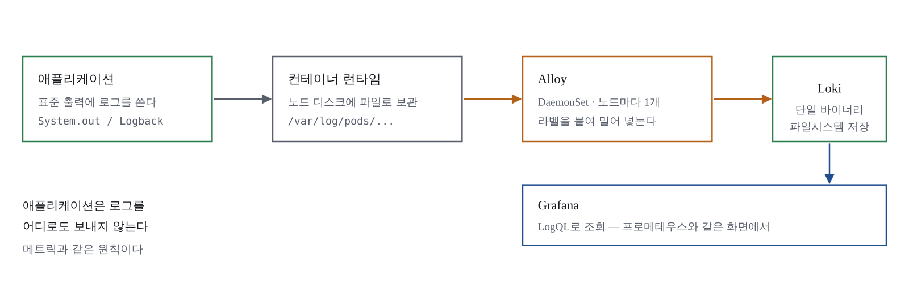
ConfigMap을 다시 적용하고(M5와 같은 명령) 대시보드를 연다. 읽는 법: 에러율 그래프가 솟은 지점에 마우스를 올리고, 아래 로그 패널에서 같은 시각의 줄을 찾는다. "그래프가 언제 튀었나" → "그때 무슨 로그가 찍혔나"가 한 화면에서 이어지는 것 — 이 시리즈에서 만들려던 상태다. 장애 조사에서는 Explore의 Split 화면(왼쪽 프로메테우스, 오른쪽 로키, 시간 범위 동기화)을 대시보드보다 더 자주 쓰게 된다.
성공 판정:
kubectl -n logging get pods에서 loki-0, loki-gateway, Alloy 3개가 Running{namespace="apps"}로 로그가 보인다sum(rate({namespace="apps"} |= "ERROR" [5m]))가 그래프로 그려진다로그가 몇 분 뒤에야 보이는 것은 정상 동작이다 — 로키는 청크를 모아서 저장하므로 실시간이 아니다. 그 밖의 문제(minio 오류, memcached 메모리, No logs found 등)가 생기면 로키·Alloy 파드의 로그부터 확인한다.
실습이 끝나면 에러 주입 루프와 포트포워드(12345)를 반드시 종료한다. 노트북 메모리가 아쉬우면 로그 스택만 걷어낼 수 있다:
helm -n logging uninstall alloy
helm -n logging uninstall loki
kubectl -n logging delete pvc --all
이 모듈이 남기는 파일: monitoring/loki-values.yaml, monitoring/alloy-values.yaml,
monitoring/kps-values.yaml(Loki 데이터소스), 로그 패널이 추가된 obs-red.json.
질문의 사슬이 완성됐다. "지금 문제가 있는가"(대시보드) → "어느 서비스인가"(RED) → "언제부터인가"(시계열) → "무슨 일이 있었나"(로그). M7은 이 동작하는 스택을 망가지지 않는 스택으로 만드는 방법을 다룬다 — 프로메테우스의 1번 사망 원인인 카디널리티, 보존 기간과 디스크 계산, 그리고 이 실습에서 일부러 타협한 설정 13가지를 운영 기준으로 되짚는다. 트레이싱(요청 하나의 경로 추적)은 이 시리즈에 포함하지 않았다 — 다음 학습 주제로 남겨둔다.
지금까지 만든 것은 동작하는 관측 스택이다. 이 모듈은 그것을 망가지지 않는 관측 스택으로 만드는 방법을 다룬다. 둘의 차이는 시간이다 — 실습 클러스터는 몇 시간을 버티면 되지만, 운영 스택은 시계열이 매일 불어나고 대시보드가 계속 늘어나는 채로 몇 년을 버텨야 한다. 사고가 나서야 모니터링을 구현하는 팀이 참 많은데, 사고가 난 뒤에 만드는 모니터링은 이미 늦다. 같은 논리로, 모니터링 스택 자신이 사고 나는 것도 사고 전에 대비해야 한다.
이 모듈은 회고이기도 하다. M2에서 @PathVariable로 URI를 매핑한 것, M2에서
프로브를 심은 것, M5에서 for:를 붙인 것 — 앞 모듈들에 무심코 심어둔 장치들이
운영의 어떤 사고를 막는 장치였는지 여기서 드러난다. 그리고 마지막 절에서, 이
실습이 속도를 위해 일부러 타협한 설정 13가지를 하나씩 되짚는다. 그대로 사내로
옮기면 안 되는 것들이다.
모범 사례는 세 덩어리다.
모니터링: 모든 노드와 쿠버네티스 컴포넌트에는 사용률·포화도·에러율(USE)을, 애플리케이션에는 처리율·에러 수·처리 시간(RED)을 건다. 예측하기 어려운 상태와 징후는 폐쇄형 모니터링으로, 시스템 내부를 조사할 때는 개방형 모니터링으로 본다. 키를 레이블로 쓰는 다차원 데이터 모델(프로메테우스류)을 구축하면 이슈가 될 증상을 더 쉽게 파악할 수 있다 — 지금까지 만든 것이 정확히 이 문장의 구현이다.
로깅: 메트릭과 로깅을 함께 써서 전체 동작을 파악한다. 로그는 30~45일 이상 쌓아두지 말고, 장기 보존은 저렴한 리소스로 옮긴다. 사이드카 로그 전달기는 리소스 소모가 크니 제한하고 데몬셋 + STDOUT을 쓴다.
알림: 알림 피로는 담당자와 프로세스 모두를 해친다. 완벽한 알림은 없다는 사실을 인정하고 점진적으로 개선한다. 즉시 대응이 필요 없는 일시적 문제는 알림을 보내지 않는다 — SLO와 고객에게 영향을 주는 증상에만 보낸다.
이 목록은 다 지난 모듈에서 봤다. 이번 실습은 목록에 없는 것 — 스택 자신의 수명 관리 — 를 다룬다.
뒤 절의 비교 기준이 된다:
curl -s --get http://localhost:30900/api/v1/query \
--data-urlencode 'query=prometheus_tsdb_head_series' \
| jq -r '.data.result[0].value[1]'
curl -s --get http://localhost:30900/api/v1/query \
--data-urlencode 'query=rate(prometheus_tsdb_head_samples_appended_total[5m])' \
| jq -r '.data.result[0].value[1]'앞의 값은 현재 시계열 개수, 뒤는 초당 저장되는 샘플 수다. 실습 규모라면 시계열 3만~8만, 초당 샘플 500~2000 정도가 나온다.
프로메테우스가 죽는 이유는 대개 트래픽이 아니라 라벨이다. 시계열 하나하나가
메모리를 차지하는데, 라벨 값의 조합만큼 시계열이 생긴다. 곱셈이라는 점이 무섭다.
M2에서 @PathVariable로 매핑해 uri가 /api/orders/{id}로 찍히게 한 것이 바로
이 사고를 막는 장치였다 — 직접 문자열을 파싱해 라우팅했다면 주문 ID 하나하나가
라벨 값이 됐을 것이다.
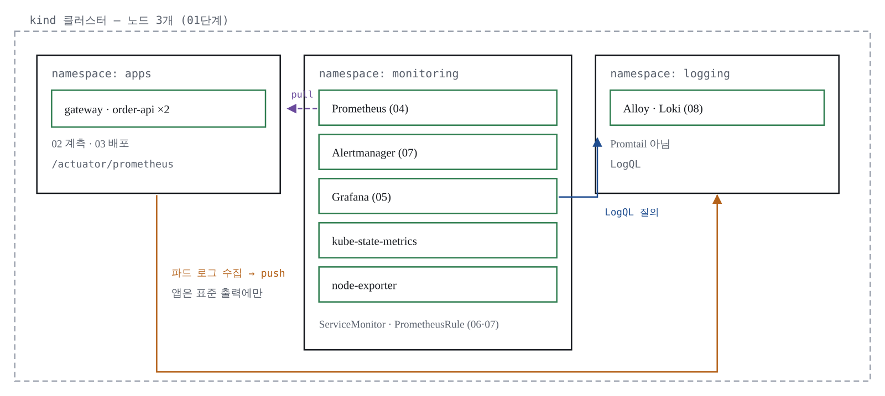
진단 질의:
# 시계열을 가장 많이 차지하는 메트릭 10개
topk(10, count by (__name__) ({__name__=~".+"}))
# 특정 라벨이 몇 종류의 값을 갖는지 — 이 숫자가 계속 늘면 위험 신호
count(count by (uri) (http_server_requests_seconds_count))
# 스크레이프 대상별로 몇 개의 시계열을 만들어내는지
topk(10, count by (job, instance) ({__name__=~".+"}))
더 편한 방법이 있다 — localhost:30900/tsdb-status를 열면 메트릭별·라벨별 시계열
수가 표로 정리돼 있다. 실전에서는 여기부터 본다. 위 진단 질의들은 모든 시계열을
훑으므로 운영 프로메테우스에서 습관적으로 쓰면 안 된다.
수집 단계에서 필요 없는 메트릭을 버린다. 저장된 뒤에 지우는 것보다 훨씬 싸고
확실하다. k8s/monitoring/90-servicemonitors.yaml의 order-api 엔드포인트에 추가:
k8s/monitoring/90-servicemonitors.yaml — order-api endpoints
endpoints:
- port: http
path: /actuator/prometheus
interval: 30s
scrapeTimeout: 10s
# 저장 직전에 적용된다. 여기서 drop된 것은 디스크에 남지 않는다.
metricRelabelings:
# 1) 실습에서 볼 일 없는 메트릭 묶음을 통째로 버린다
- sourceLabels: [__name__]
regex: "jvm_buffer_.*|jvm_classes_.*|process_start_time_seconds"
action: drop
# 2) 액추에이터 엔드포인트 자신에 대한 요청은 관심 대상이 아니다
- sourceLabels: [uri]
regex: "/actuator.*"
action: drop
# 3) 404가 찍히는 정체불명 경로는 uri 라벨을 통일해 버린다
# (스캐너가 임의 경로를 두드리면 카디널리티가 폭증한다)
- sourceLabels: [status]
regex: "404"
targetLabel: uri
replacement: "NOT_FOUND"
action: replacekubectl apply -f k8s/monitoring/90-servicemonitors.yaml
# 적용 전후로 시계열 수를 비교한다
sleep 60
curl -s --get http://localhost:30900/api/v1/query \
--data-urlencode 'query=prometheus_tsdb_head_series' \
| jq -r '.data.result[0].value[1]'이미 저장된 시계열은 즉시 사라지지 않는다. 새로 들어오는 데이터가 없으면 보존 기간이 지나며 정리된다. 그리고 경고 하나 — 버린 데이터는 없는 데이터다. 장애 조사 중에 "그 메트릭이 있었더라면" 하고 후회하는 상황이 실제로 생긴다. 먼저 지울 것은 명백한 쓰레기부터, 애매한 것은 보존 기간을 줄이는 쪽으로 대응한다.
버킷이 카디널리티의 큰 몫을 차지한다면 Prometheus 3.8부터 정식이 된 네이티브
히스토그램이 근본 대안이다 — 버킷을 미리 정하지 않고 자동으로 나눈다. 다만 기존
대시보드와 histogram_quantile 사용법이 달라지고 스프링·그라파나 양쪽 지원 상태를
확인해야 하므로, 지금 바꾸기보다 다음 분기 과제로 올려두는 것을 권한다.
디스크 필요량은 곱셈 세 개로 어림한다:
필요 디스크 ≈ 보존 기간(초) × 초당 샘플 수 × 샘플당 바이트(1~2B)
예) 15일 보존, 초당 2,000샘플, 샘플당 2B
= 1,296,000 × 2,000 × 2 ≈ 5.2 GB (여기에 여유 30~50%를 더한다)# 우리 클러스터의 실제 초당 샘플 수
curl -s --get http://localhost:30900/api/v1/query \
--data-urlencode 'query=sum(rate(prometheus_tsdb_head_samples_appended_total[10m]))' \
| jq -r '.data.result[0].value[1]'
조절 손잡이마다 대가가 있다. scrapeInterval을 30s→60s로 늘리면 샘플이 절반이
되지만 rate() 윈도도 함께 늘려야 하고(간격의 4배 이상) 짧은 스파이크를 놓친다.
retention 단축은 디스크를 선형으로 줄이지만 주간 비교·용량 추세 분석이 불가능해진다.
retentionSize는 디스크 상한을 보장하지만 기간보다 먼저 걸리면 오래된 데이터가
조용히 사라진다.
retention: 3d와 retentionSize: 4GB를 함께 넣었는데, 둘 중 먼저 도달하는
쪽이 이긴다. 부하를 크게 걸면 3일이 되기 전에 4GB에 걸려 "어제 그래프가
사라졌다"는 상황이 생긴다. 버그가 아니라 설정대로 동작한 것이다. 규모가 더
커지면 손잡이 조절로는 부족하고 원격 쓰기(Remote-Write 2.0)로 장기 저장을
분리하는 구조로 넘어간다 — 이 실습 범위 밖이므로 이름만 기억해 두라.
M2에서 애플리케이션에 CPU 제한을 걸지 않았다. 그 판단의 근거를 숫자로 확인한다:
# CPU 스로틀링 비율 — 0에 가까워야 정상
sum by (pod) (rate(container_cpu_cfs_throttled_periods_total{namespace="apps"}[5m]))
/
sum by (pod) (rate(container_cpu_cfs_periods_total{namespace="apps"}[5m]))이 값이 0.2를 넘으면 컨테이너가 주기의 20%를 강제로 쉬고 있다는 뜻이다. 응답 시간 그래프의 톱니가 코드 때문인지 스로틀링 때문인지는 이 질의를 함께 봐야만 구분된다. 메모리는 다르게 다룬다 — 제한 대비 사용률이 0.9를 넘나들면 OOMKilled가 임박한 것이다. CPU는 모자라면 느려지지만, 메모리는 모자라면 죽는다. 그래서 CPU 제한은 신중하게, 메모리 제한은 반드시 건다.
자원을 바꿀 때 예전에는 파드를 다시 만들어야 했다. In-Place Pod Resize가 1.35에서 정식 기능이 되면서 달라졌고, M1에서 만든 클러스터는 1.36이므로 바로 써볼 수 있다:
POD=$(kubectl -n apps get pod -l app.kubernetes.io/name=order-api \
-o jsonpath='{.items[0].metadata.name}')
# resize 서브리소스로 메모리 상한을 올린다 (kubectl v1.32+ 필요)
kubectl -n apps patch pod "$POD" --subresource resize --type=merge \
-p '{"spec":{"containers":[{"name":"order-api","resources":{"requests":{"memory":"448Mi"},"limits":{"memory":"768Mi"}}}]}}'
# 재시작 없이 반영됐는지 — restartCount가 그대로여야 한다
kubectl -n apps get pod "$POD" \
-o jsonpath='{.status.containerStatuses[0].resources}{"\n"}{.status.containerStatuses[0].restartCount}{"\n"}'
읽어야 할 곳이 두 곳이 됐다 — spec.containers[*].resources는 원하는 상태이고,
status.containerStatuses[*].resources가 실제 적용된 값이다. 노드에 여유가 없으면
Infeasible 사유로 거절된다. 주의: 이 명령은 파드 하나를 고친다. 디플로이먼트
템플릿은 그대로이므로 파드가 다시 만들어지면 원래 값으로 돌아간다. 영구 반영은
여전히 매니페스트를 고쳐 배포하는 것이고, 리사이즈는 지금 당장 죽어가는 파드를
살리는 용도다.
트러블슈팅 12선의 8번을 직접 재현한다. 프로메테우스 UI(30900)에서 다음 질의를
실행해 보자 — M4에서 쓰던 P95 질의에서 le만 빼고 집계한 것이다:
histogram_quantile(0.95,
sum by (service) (rate(http_server_requests_seconds_bucket{namespace="apps"}[5m])))
결과가 전부 NaN이다. 에러가 아니라서 더 위험하다 — 대시보드에 넣으면 패널이
비어 보일 뿐, 무엇이 잘못됐는지 아무도 말해주지 않는다. histogram_quantile은
버킷 경계 라벨 le를 보고 분위수를 계산하는데, sum by에서 le를 빼면 버킷이
전부 합쳐져 계산할 재료가 사라진다. sum by (le, service)로 고치면 즉시 정상 값이
나온다. 대시보드가 비었을 때의 진단 순서(같은 질의를 프로메테우스 UI에서 →
타깃 상태 → 앱 엔드포인트 curl)에서, "질의 자체가 틀린" 경우의 대표 사례다.
다른 증상을 만나도 공통 원칙은 하나다 — "안 된다"는 상황에서 가장 먼저 할 일은 범위를 절반으로 자르는 것. 한 번에 한 계층씩 내려가면 대부분 세 번 안에 원인에 닿는다.
이 시리즈에서 일부러 타협한 설정들이다. 실습을 빨리 굴리기 위한 선택이었고, 사내 클러스터로 옮길 때는 반드시 바꿔야 한다. 스터디 마지막 시간에 이 표를 함께 읽기를 권한다.
| 단계 | 실습에서의 선택 | 운영에서 바꿀 것 |
|---|---|---|
| M1 | bind-address: 0.0.0.0으로 컨트롤 플레인 메트릭 개방 | 노드 IP만 바인딩하거나 방화벽으로 대역 제한 |
| M2 | ChaosController가 항상 활성 | @Profile로 분리. 운영 프로파일에서는 빈 등록조차 안 되게 |
| M2 | CPU limit 미설정 | 공용 클러스터라면 설정하고 스로틀링 메트릭을 함께 감시 |
| M2 | readOnlyRootFilesystem 미적용 | 적용하고 /tmp에 emptyDir |
| M2 | 레지스트리 없이 kind load | 사내 레지스트리 + 이미지 서명·스캔 |
| M3 | insecureSkipVerify: true | 노드 IP를 SAN에 포함한 인증서로 검증 활성화 |
| M3 | 관측 스택을 노드 한 대에 몰아넣음 | 분산 배치 — 모니터링이 한 노드와 함께 죽으면 장애를 볼 눈이 없다 |
| M3 | 그라파나 비밀번호를 값 파일에 평문 | Secret 또는 외부 시크릿 관리자, 가능하면 SSO |
| M3 | NodePort로 UI 직접 노출 | 인증을 거치는 진입점 뒤로. 프로메테우스 UI는 인증이 없다 |
| M3 | 사이드카 searchNamespace: ALL | 필요한 네임스페이스만 나열 |
| M5 | 임계값 5% · 500ms를 임의 설정 | 2주 이상 관측한 실제 분포로 재설정 |
| M6 | 로키 파일시스템 단일 인스턴스 | 오브젝트 스토리지 + 확장 모드. 파일시스템은 데이터를 잃는 구성 |
| M6 | 캐시 비활성 | 운영 규모에서는 필수 — 없으면 질의가 감당 안 된다 |
매니페스트는 리뷰를 거치지만 values.yaml은 "잘 되는 설정"이라며 통째로 복사되는
일이 잦다. 파일 이름에 환경을 박아두라 — kps-values.kind.yaml처럼. 이름만으로도
복사를 한 번 망설이게 만든다.
대시보드와 알림이 늘어날 때의 관리 기준도 미리 정해둔다 — 비슷한 대시보드 3개 이상이면 변수로 합치기, 같은 장애에 알림 열 개면 증상만 남기기, 만료 없는 Silence 금지, 분기별 알림 회고. M5에서 정한 "알림을 몇 개 만들 것인가"의 운영편이다.
최종 체크리스트:
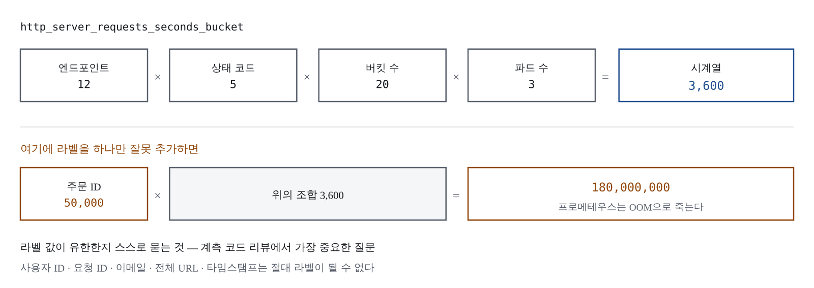
재현성 검증이 남았다. 저장소에 커밋해 둔 파일만으로 클러스터를 처음부터 다시
만들 수 있어야 한다 — rebuild.sh 스크립트(전문은 실습 코드 저장소에 있다)가
클러스터 생성부터 대시보드 등록까지 6단계를 자동화하며, 40분 안에 복원된다. 로그 스택은 메모리를
크게 쓰므로 스크립트에 넣지 않았다 — 필요할 때만 별도 설치한다. 실습이 완전히
끝났다면 자원을 돌려받는다:
kind delete cluster --name obs
docker system prune -a --volumes
이 모듈이 남기는 파일: metricRelabelings가 추가된 90-servicemonitors.yaml,
rebuild.sh, 그리고 팀과 함께 읽은 "실습 → 운영" 체크리스트.
시리즈가 만든 것은 도구 모음이 아니라 질문의 순서다. "지금 문제가 있는가" → "어느 서비스인가" → "언제부터인가" → "무슨 일이 있었나". 도구는 몇 년 안에 바뀌지만 이 순서는 남는다.
그런데 이 순서가 실제로 동작한다는 것을 우리는 어떻게 확신하는가. 지금까지는 장애가 나면 보인다는 것을 에러 주입으로 몇 번 확인했을 뿐이다. M8(테스팅과 카오스 실험)에서는 방향을 뒤집는다: 가설을 세우고, 일부러 장애를 만들고, 방금 완성한 관측 스택으로 판정한다. 관측 가능성이 확보되지 않으면 프로덕션 테스팅은 불가능하다 — M7까지 온 지금이 바로 그 전제 조건이 갖춰진 시점이다.
지금까지 우리는 "장애가 나면 보인다"를 만들었다. 그런데 그 문장은 아직 증명된 적이 없다. 알림 규칙 4개는 한 번도 발화한 적 없고, 대시보드의 P95 패널은 평평한 선만 그려왔다. 장애가 실제로 났을 때 이 장치들이 약속대로 움직이는지는, 장애가 나기 전까지 모른다.
프로덕션 테스팅의 전제 조건은 테스트의 효과를 정확하게 식별할 수 있는 깊이 있는 관찰 가능성이다. 뒤집으면 — 관측 스택을 다 만든 우리는 이제 장애를 일부러 만들어도 되는 몇 안 되는 상태에 있다. 이 모듈은 장애를 주입해서 두 가지를 동시에 검증한다. 애플리케이션이 견디는가(회복 탄력성), 그리고 관측 스택이 그것을 제대로 보여주는가(지금까지 만든 스택의 회귀 테스트).
사고가 난 뒤에 알림 임계값이 틀렸다는 걸 배우는 것과, 화요일 오후에 통제된 실험으로 배우는 것의 차이가 이 모듈의 전부다.
원칙 하나만 기억하면 된다: 테스트가 실패하면 빌드도 실패한 것이다. 테스트가 깨진
소스를 컨테이너 이미지로 구워 레지스트리에 푸시하는 순간, 그 이미지는 언젠가 배포된다.
우리 실습에서는 ./gradlew build가 JUnit 테스트를 포함하므로, redeploy.sh 이전에
테스트가 도는 구조다. 테스트 대상은 애플리케이션 코드만이 아니다 — helm lint처럼
차트·매니페스트 같은 인프라 구성물도 파이프라인에서 검사할 수 있다.
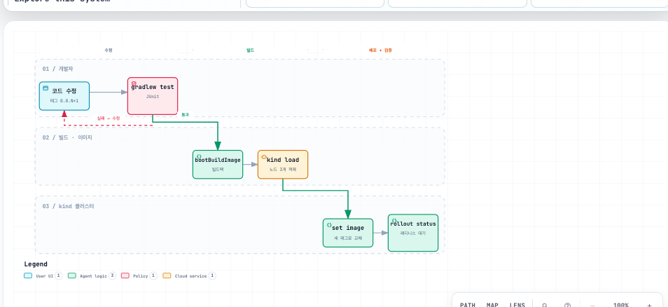
롤링 업데이트·블루/그린·카나리 중 무엇을 쓰든 같은 질문에 부딪힌다. "새 버전이 정상인지 무엇으로 판단하는가?" 카나리 배포에서 트래픽 10%를 새 버전에 흘렸다면, 그 10%가 양호한지 판단할 메트릭이 있어야 다음 단계로 갈 수 있다. 그 메트릭이 바로 M4에서 만든 RED 지표다. 배포 전략은 관측이 없으면 절반만 동작한다.
롤링 업데이트가 무중단이 되는 조건도 이미 우리 매니페스트에 있다: readinessProbe가
새 파드를 준비될 때까지 서비스에서 빼두고, terminationGracePeriodSeconds: 40이
종료 중인 파드에 인플라이트 요청을 마칠 시간을 준다. M2에서 심은 이 설정들이
이번 실험의 피험자다.
넷플릭스에서 시작된 방법. 통제된 실험으로 시스템에 장애를 주입해 취약점을 미리 찾는다. "게임 데이" 실험은 4단계를 밟는다:
핵심 규율은 폭발 반경(blast radius) 최소화다. 첫 실험은 파드 1개, 네임스페이스 하나, 5분. "스테이징에서 하면 안 되나?" — 스테이징은 구성·트래픽· 데이터·모니터링이 전부 프로덕션과 달라서, 스테이징에서의 생존이 프로덕션의 생존을 보장하지 않는다. 우리 실습 환경은 스테이징조차 아니지만, 절차와 규율을 몸에 익히는 것이 목적이다.
실습 도구는 Chaos Mesh(CNCF)다. CRD 기반이라 실험을 YAML로 정의한다 — 지금까지 매니페스트로 일해온 흐름과 같고, 실험 정의가 저장소에 남아 대시보드 JSON·PrometheusRule과 같은 방식으로 관리된다.
시작 전에 M5의 PrometheusRule 4개와 obs-red 대시보드가 살아 있는지 확인한다 — 이번 실험들의 판정 도구다.
kind 노드는 containerd를 쓰므로 소켓 경로를 지정해야 한다. 이걸 빼먹으면 chaos-daemon이 뜨긴 하는데 실험이 아무 일도 하지 않는다 — 아래 "일부러 실패시키기"에서 직접 확인한다.
helm repo add chaos-mesh https://charts.chaos-mesh.org
helm repo update
# 실습 당일 최신 안정 버전 재확인 (2026-08 기준 2.8.2)
helm search repo chaos-mesh/chaos-mesh
kubectl create ns chaos-mesh
helm install chaos-mesh chaos-mesh/chaos-mesh \
--namespace chaos-mesh \
--version 2.8.2 \
--set chaosDaemon.runtime=containerd \
--set chaosDaemon.socketPath=/run/containerd/containerd.sock검증 — chaos-daemon은 데몬셋이라 노드 수만큼 뜬다 (worker 2개 구성이면 3개):
kubectl -n chaos-mesh get pods
# controller-manager 3개(리더 선출), chaos-daemon 노드당 1개, dashboard 1개
# 전부 Running이어야 다음으로 간다실험 내내 세 개의 창을 띄워둔다.
# 터미널 1 — 부하 (M4의 부하 루프 그대로)
while true; do
curl -s -o /dev/null -X POST http://localhost:30080/api/orders \
-H 'Content-Type: application/json' \
-d '{"item":"latte","quantity":2}'
sleep 0.3
done
# 터미널 2 — 파드 상태 감시
kubectl -n apps get pods -w
# 브라우저 — 그라파나 obs-red 대시보드 + 프로메테우스 Alerts 화면(localhost:30900/alerts)
실험마다 apps/chaos/gameday-sheet.md를 복사해 1~3번(가설·이벤트·대조군)을
실험 전에 채운다. 실험 후에 가설을 쓰면 게임 데이가 아니라 사후 합리화다.
가설: replicas 2 + readinessProbe 덕분에 order-api 파드 1개가 죽어도 gateway의 5xx 비율은 5%(AppHighErrorRate 임계값)를 넘지 않는다.
# 첫 실험은 이름을 직접 골라 1개만 지운다
kubectl -n apps get pods -l app.kubernetes.io/name=order-api
kubectl -n apps delete pod <이름>관찰 포인트: 터미널 2에서 새 파드가 뜨고 startupProbe를 통과할 때까지의 시간. 그동안 대시보드의 처리율(Rate)이 절반이 되는지, 에러(Errors)가 튀는지. 남은 파드 1개가 트래픽 전부를 받으므로 P95가 소폭 오르는 것은 정상이다.
apps/chaos/10-podchaos-order-api-kill.yaml
# 실험 1 — order-api 파드 1개 강제 종료 (일회성)
#
# 가설: replicas 2 + readinessProbe 덕분에 파드 1개가 죽어도
# gateway의 5xx 비율은 AppHighErrorRate 임계값(5%) 아래에 머문다.
#
# 적용: kubectl apply -f 10-podchaos-order-api-kill.yaml
# 확인: kubectl -n chaos-mesh describe podchaos order-api-pod-kill
# 정리: kubectl delete -f 10-podchaos-order-api-kill.yaml
#
# mode: one — 폭발 반경 최소화. 대상 파드 중 무작위 1개만 종료한다.
apiVersion: chaos-mesh.org/v1alpha1
kind: PodChaos
metadata:
name: order-api-pod-kill
namespace: chaos-mesh
labels:
app.kubernetes.io/part-of: obs-study
spec:
action: pod-kill
mode: one
selector:
namespaces:
- apps
labelSelectors:
app.kubernetes.io/name: order-apikubectl apply -f apps/chaos/10-podchaos-order-api-kill.yaml
kubectl -n chaos-mesh describe podchaos order-api-pod-kill # 어느 파드를 골랐는지 기록됨
kubectl delete -f apps/chaos/10-podchaos-order-api-kill.yaml실험 1과 결과가 같아야 한다. 차이는 재현성이다 — 이 YAML은 저장소에 남고, 다음 사람이 같은 실험을 같은 조건으로 돌릴 수 있다.
가설: order-api에 600ms 지연을 주입하면 gateway P95가 따라 올라가 AppHighLatencyP95(P95 > 0.5s, for: 3m)가 발화하고, 5분 뒤 실험이 끝나면 해소된다. M2에서 예고했던 "지연이 전파되는 모습"을 이번엔 앱 코드가 아니라 인프라 수준에서 만든다.
apps/chaos/20-networkchaos-order-api-delay.yaml
# 실험 2 — order-api 수신 트래픽에 600ms 지연 주입 (5분간)
#
# 가설: order-api가 600ms 느려지면 gateway의 P95가 따라 올라가
# AppHighLatencyP95 알림(P95 > 0.5s, for: 3m)이 발화하고,
# 실험 종료 후 저절로 해소된다.
#
# 600ms인 이유: 알림 임계값이 0.5s이므로 jitter를 감안해도 확실히 넘긴다.
# duration 5m인 이유: for: 3m 인 알림이 발화하는 것까지 보려면 3분 이상 유지돼야 한다.
#
# 적용: kubectl apply -f 20-networkchaos-order-api-delay.yaml
# 관찰: 실험 중 obs-red 대시보드에서 gateway·order-api P95가 같이 오르는지
# 정리: duration이 지나면 자동 해제. 즉시 중단하려면 kubectl delete -f <이 파일>
apiVersion: chaos-mesh.org/v1alpha1
kind: NetworkChaos
metadata:
name: order-api-delay
namespace: chaos-mesh
labels:
app.kubernetes.io/part-of: obs-study
spec:
action: delay
mode: all
selector:
namespaces:
- apps
labelSelectors:
app.kubernetes.io/name: order-api
delay:
latency: "600ms"
jitter: "100ms"
duration: "5m"kubectl apply -f apps/chaos/20-networkchaos-order-api-delay.yaml타임라인 (부하 루프가 돌고 있어야 한다):
발화 여부는 화면 말고 API로도 남긴다:
curl -s http://localhost:30900/api/v1/alerts \
| jq -r '.data.alerts[] | "\(.labels.alertname)\t\(.state)"'인프라는 멀쩡한데 앱이 에러를 뱉는 시나리오. M2에 심어둔 ChaosController가 장애 주입기가 된다.
# 30% 확률로 5xx — AppHighErrorRate(>5%, for: 2m) 발화 조건
for i in $(seq 1 600); do
curl -s -o /dev/null "http://localhost:30080/api/chaos/error?rate=0.3"
sleep 0.3
done실험 3과 비교하며 볼 것: 이번엔 P95는 조용하고 에러율 패널만 움직인다. 같은 "장애"라도 지연형과 에러형은 다른 패널, 다른 알림에 잡힌다 — RED의 E와 D를 분리해 둔 이유가 여기서 증명된다.
Chaos Mesh를 --set chaosDaemon.socketPath=... 없이 설치하면 (기본값은 도커 소켓)
모든 파드가 Running인데 PodChaos를 적용해도 파드가 죽지 않는다.
kubectl -n chaos-mesh logs ds/chaos-daemon | grep -i error | head
# "no such file or directory" 류의 컨테이너 런타임 접속 실패가 보인다
교훈: "설치 성공"과 "동작함"은 다르다. M3에서 타깃 14종을 일일이 확인했던 것과
같은 이유다. 복구는 helm upgrade --reuse-values --set chaosDaemon.runtime=containerd
--set chaosDaemon.socketPath=/run/containerd/containerd.sock ....
order-api를 replicas 1로 줄이고 파드 킬을 반복한다.
kubectl -n apps scale deploy/order-api --replicas=1
kubectl apply -f apps/chaos/10-podchaos-order-api-kill.yaml이번엔 가설이 기각돼야 정상이다: 유일한 파드가 죽는 순간 gateway는 502를 뱉고, JVM 기동 + startupProbe 통과까지 수십 초간 에러율 100%. AppHighErrorRate가 발화한다. M2에서 replicas 2와 프로브 3종을 심은 이유가, 그것을 빼는 순간 그래프로 증명된다.
kubectl delete -f apps/chaos/10-podchaos-order-api-kill.yaml
kubectl -n apps scale deploy/order-api --replicas=2 # 원복
부하 루프를 반드시 끈다 (터미널 1 Ctrl-C). 카오스 리소스가 남아 있지 않은지
kubectl -n chaos-mesh get podchaos,networkchaos로 확인한다. Chaos Mesh 자체를
내리려면 helm uninstall chaos-mesh -n chaos-mesh.
이 모듈로 강의 본편이 끝난다. "메트릭이 이상을 알려주고 로그가 이유를 말해준다"로 시작한 여정이, 이상을 일부러 만들어 그 문장을 증명하는 것으로 닫혔다. 다음은 두 방향이다: 트레이싱(OTLP·Tempo — 이번 시리즈 미포함)으로 "어느 구간에서 느려졌나"를 채우거나, M7의 "실습 → 운영" 표를 들고 사내 환경으로 옮기거나. 옮길 때 이 모듈의 게임 데이 시트를 첫 운영 훈련 양식으로 재사용하면 된다.
산출물: apps/chaos/ 매니페스트 2개 · gameday-sheet.md · 채워진 실험 시트 4장
모든 모듈이 끝나면 실습 중 띄워둔 것들을 정리합니다. 특히 부하 생성 루프는 켜둔 채 잊기 쉽습니다.
kill %1 또는 터미널 종료kubectl -n chaos-mesh get podchaos,networkchaos 결과가 비어 있어야 합니다kind delete cluster --name obs이 실습의 설정은 학습 속도를 위해 타협한 값이 여럿 있습니다(단일 레플리카 저장소, 짧은 보존 기간, CPU limit 미설정 등). 운영 환경으로 옮기기 전에 M7의 운영 전환 체크리스트를 다시 확인하세요.